The markdown and @-directive syntax of the reveal.js framework at mga.is · from SPEC.md version 1 (30 October 2026) and the repository's CLAUDE.md · page dated 30 October 2026, updated after phases 1a and 1b the same day and after phase 5B on 31 October, and after phase 6b (corporate pilots) on 1 November
How to read this page
This page lists every piece of slide syntax in the mga.is framework: what exists today and what the build specification (SPEC.md, version 1, 30 October 2026) has settled for the coming phases. Each entry gives the name, its status, a sentence on what it does for the audience, the syntax as a block you can copy, a small picture of the result, and a table of options. Each entry also names the PowerPoint or Keynote device it replaces, so a search for the old name (Magic Move, takeaway panel, grade strip) finds the new construction. Everything on the page is visible text: Cmd-F finds any directive, option or description.
The slide pictures are mock-ups drawn in plain HTML in the Cream look (off-white paper, dark ink, small-caps headings). They show layout and behaviour, not exact rendering: proportions, fonts and colours are approximate, and icons are stand-in characters for the Font Awesome icons. As each construction is built, a screenshot of the real rendering replaces its mock-up. Behaviour that happens on a click is shown as a row of still frames labelled Start, Click 1, Click 2 and so on.
Status key
Badge
Meaning
Exists
In the framework today (documented in the repository's CLAUDE.md).
Planned · phase 2a
Settled in SPEC.md but not yet built. The phase is the build phase in SPEC.md section 11: 1a parser and inline marks; 1b slide control, deck keys and small directives; 2a text blocks; 2b sets, motion and images; 3 grammar; 4 corporate mode; 5 export; 6 conversion.
Built · phase 2a
Built in that phase and in the repository. Phase 1a built the shared parser, every inline mark except morpheme words, and the palette (committed). Phase 1b built the slide flags, build control, the deck keys, @note options, @source, @pause, @include, heading subtitles and the Charcoal theme (committed). Phase 2a built the text blocks: @cards/@columns, @terms, @stats, @ex, @table, @kwic, @tree and @transcript (committed). Phase 2b built @set and tags (with ribbon headings), @menu, @slide morph and the morph work, morpheme words, @marks with ?coords, over=, bleed, hold on @image and @image-seq, and @video (committed). Phase 3 built @parse and @passage. Phase 4 built corporate mode and phase 5 the export page. Phase 5B built the forms and palettes, the new grammar colours, @card, the card flag on @quote and the bars flag on @table, and retired the layouts. Phase 6b built @cards style=header, disc=, @rule, the corporate @stats, contrast slide, title bar and fitting, and the uog/ series.
Retired · phase 5B
Was in the framework and has been taken out; the entry stays so that old decks and old notes can be read.
An existing directive that gains new options keeps its Exists badge; each new option carries its own Planned badge in the options table.
Finding a construction by its old name
Old name
Use
Magic Move (Keynote), Morph (PowerPoint)
@slide morph with [[pieces]]; a Morph that matched nothing becomes @slide fade
These rules apply to every new directive. Phase 1a built the parser that applies them; the directives that use it arrive from phase 1b onwards, so nothing on a slide changes yet apart from the error slides (a stray @end is now one). The existing directives (listed below) already follow the same one-directive-per-line pattern.
Positional values come first: a path (it contains . or /), a set or block name, or a number.
Text-first one-line directives (@section, @note, @source) take the rest of the line as text. Options follow :: at the end of the line: @section Part 1 :: blue, @note **Modern:** silly :: top build.
Colour options take a palette name (see Palette) or #RRGGBB.
List-valued options are comma-separated without spaces: widths=2,1, lit=3,5.
steps="..." is the one quoted, space-separated sequence (@parse, @passage). A + joins two steps into one click.
:: alone at the start of a line, optionally followed by flags, opens the next card or column. :: inside a line separates fields. The two never meet in one context. Inside a card, a mid-line :: is literal unless the line belongs to an item-line directive.
@cards
### Synchronic
One state of a language
:: accent
### Diachronic
Change over time
@end
@end
@end on its own line closes a markdown body. It may be left out when the block is the last thing on the slide apart from slide furniture (@slide, @source, and @note in corporate mode), which the framework places wherever it is written. Directives may sit inside a markdown body, for example an @image in a column.
Named blocks
Any block directive may carry name=ID. Later in the same deck, the same directive with ID as its first positional value and no body repeats the block with the new options. Across decks, use @include.
The second slide repeats the two blends with the glosses as answers. A repeat keeps the original's options and flags; options written on the repeat replace the original values, and its flags are added (so sc need not be repeated, though it does no harm). A repeat takes no body of its own; a name used twice, or a repeat of a name not defined earlier in the deck, gives the error slide.
Escapes
Write
To get
Status
@@ at the start of a line
a literal @ (the line is not a directive)
Exists
\[
a literal [; needed for a prose bracket that starts with a grammar code and a space: \[A treatise ...]
Built · phase 1a
\{
a literal {
Built · phase 1a
\*
a literal * (also keeps a judgement mark from becoming italic)
Built · phase 1a
\|
a literal |, including in a heading (## Heading | subtitle otherwise starts a second line)
Built · phase 1a
Raw HTML, <!-- .slide: ... -->, <!-- .element: ... -->
reveal.js's own attributes, as an escape hatch
Exists
Separators (complete list)
Separator
Where
Meaning
blank line + ---
content.md
new slide (exists)
-- on its own line
content.md
new vertical slide (exists)
notes: at line start
content.md
speaker notes (exists; SPEC.md: never put notes in content.md, which is publicly fetchable)
line break in the analysis; at line end, continue on the next line
//
@transcript
overlap onset, aligned automatically
+ at line start
@marks
join the previous step
+ inside a morpheme word
[un- + help]{split}
morpheme boundary
Inline marks
The rule
A brace on its own means something happens on a click. A brace straight after a closing bracket styles the bracketed text. Square brackets with a grammar label mark a grammatical function.
So ==x== is a static highlight and {==x==} highlights on a click; [x]{gold} is gold text, with no click; [S Tam] is a subject.
Every inline form
Form
Meaning
Click?
Example
Result
Status
**x***x*~~x~~`x`
bold, italic, strikethrough, code
no
**pace***pace*~~pace~~`pace`
pacepacepacepace
Exists
^^x^^
real small caps
no
^^argumentiswar^^
argument is war
Exists
%%x%%
text in the theme's subtle colour
no
%%Abig,grey%%cat
A big, grey cat
Exists
==x==
highlight in the theme's highlight colour
no
Thecitywas==bombed==
The city was bombed
Built · phase 1a
[x]{name}
text in a palette colour; accent gives the theme accent
no
[defended]{gold}[Thearmy]{accent}
defendedThe army
Built · phase 1a
[Sx]
grammatical function colour (labelled bracketing), at the text's own weight; cj bold in the ink; codes S P O Od Oi C Cs Co A cj
no
[STam][Pregards][Ome]
Tamregardsme
Built · phase 1a
[[x]]
morph piece; if x is a label in a @set, that set's tag
no
[[super]][[man]][[Orthographic]]
superman✒Orthographic
Built · phase 1a
[[x|id]]
morph piece with a hand-set id
no
[[p|pger-p]]
p(id pger-p, matched across morph slides)
Built · phase 1a
[[x]]{name}
tag pill in a colour (also a morph piece)
no
[[GPA9.0]]{grey}
GPA 9.0
Built · phase 1a
:fa-name:
Font Awesome icon, from the self-hosted subset (local preview names any icon the subset lacks)
no
:fa-images:
◎(stand-in for the icon)
Built · phase 1a
{==x==}
highlight appears on a click
yes
astrong{==collocate==}
a strong collocateClick 1:a strong collocate
Built · phase 1a
{++x++}
text inserted on a click (grows in)
yes
{++dis++}graceful
gracefulClick 1:disgraceful
Built · phase 1a
{--x--}
text removed on a click (closes up)
yes
br{--eakfast+l--}unch
breakfast + lunchClick 1:brunch
Built · phase 1a
{~~a~>b~~}
a replaced by b on a click
yes
provide{~~comfort~>goodthings~~}
provide comfortClick 1:provide good things
Built · phase 1a
{answerx}
an answer: a click step when presenting, hidden in the student version
yes
brunch:{answerbreakfast+lunch}
brunch:Click 1:brunch: breakfast + lunch
Built · phase 1a
\[\{\*\|
literal character
\[AtreatiseontheEnglishverb]
[A treatise on the English verb]
Built · phase 1a
@@ at line start
literal @
@@mga_is
@mga_is
Exists
The click marks in export: the final-state PDF (?fragments=false, which CI uses) shows {--x--} struck through, {++x++} in the accent colour, and {~~a~>b~~} as a struck through followed by b in the accent, so the starting state stays visible. Inserted and removed text open and close the line smoothly. The set tag colours arrive with @set in phase 2b. Local preview logs unknown colour names (which stay as typed), grammar marks longer than eight words, and icons missing from the subset.
The real rendering (specimen deck, Cream Serif)
Static marks, colour marks, tags and icons
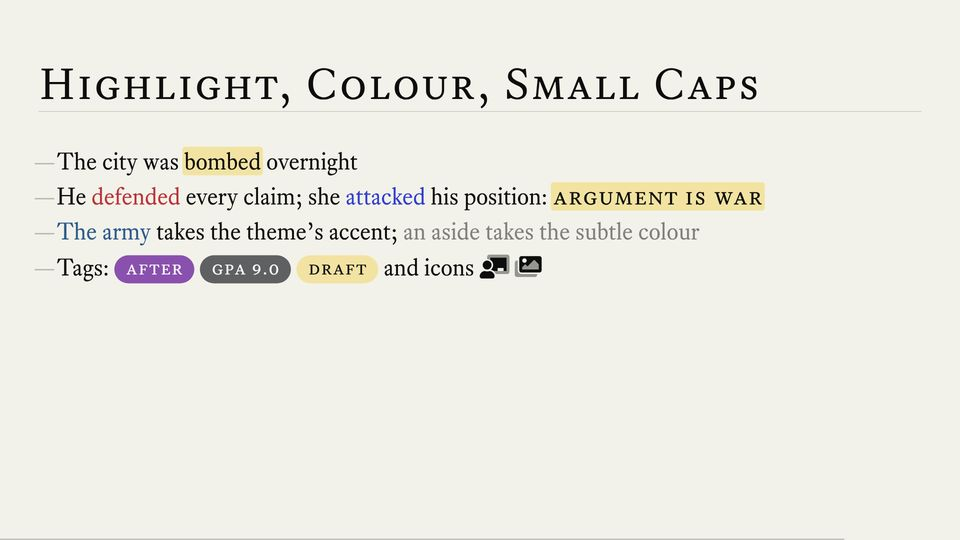
Grammar marks
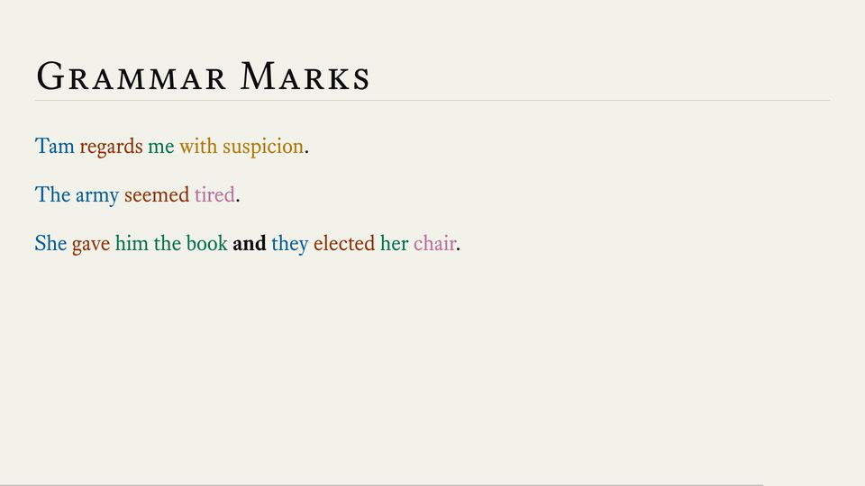
Marks on a click: the start, each of the five clicks, and the export
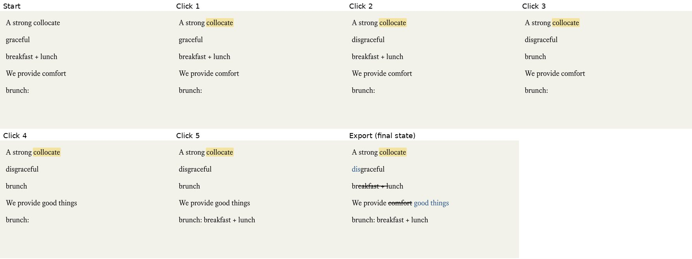
Rules that keep the marks apart
Grammar marks.[CODE text], where CODE is one of S P O Od Oi C Cs Co A cj (capitals as written) followed by a space. They work anywhere in a deck. A prose bracket that begins with one of these codes and a space is written with a backslash: \[A treatise ...]. Grammar colours are reserved for grammar: the codes are not palette names, and the palette has no grammar colours. Local preview logs any grammar mark it suspects is prose (a mark longer than about eight words). Two marks may touch, as in [S You][P 're saying]: a grammar mark straight after another is a mark, not a reference link, and a contraction at the start of a mark ('s 're 've 'm 'll 'd 't) is set as an apostrophe.
Colour marks.[x]{name} needs a known palette name or accent; anything else stays as typed and is logged in local preview. Markdown links [x](url) and references [x][ref] are unaffected.
Click marks. The four CriticMarkup forms plus {answer x}.
Pieces.[[ opens a piece and ]] closes it; a piece cannot contain ]]. Attribute braces after ]] style it.
Inner spaces. Every paired mark needs a non-space character immediately inside each marker, so a == b stays literal.
Nesting. Static marks and colour marks nest: ==^^argument is war^^==, [[ [assume]{red} ]]. The click marks do not nest in each other.
Scope. Inline marks are not interpreted inside @parse lines, code spans or code blocks.
Not supported: the old forms {name x}, {S x} and !!x!! from VOCAB-v2 and the round 1 prototypes. A tag is written [[Discovery]]{green}, not [Discovery]{tag green} (an earlier sketch), because a tag is a piece.
Morpheme words [un- + help]{split}
Built · phase 2b
A morpheme word shows a word with its morphemes marked, so the audience can see a word joined, split into its parts, or built from puzzle pieces, and watch it change between two morph slides.
Replaces in PowerPoint/Keynote: morpheme splits made with Morph or Magic Move, coloured letter groups, jigsaw-piece shapes.
Also searched as: morphology, affixes, prefix, suffix, base, root, segmentation, word structure, jigsaw, puzzle pieces, morpheme boundary.
Syntax
[un- + help + -ful + -ness]{plain}
[un- + help + -ful + -ness]{split}
[un- + help + -ful + ~-ness]{jigsaw}
The textbook notation: + with a space on both sides separates morphemes; a leading or trailing hyphen marks the affix side (shown only in the split state). The state after the bracket is required and identifies the mark. Each piece gets a colour from a cycle and a stable id from the word and the piece, so two morph slides animate every change. ~ before a piece hides it but keeps its id, so a morph fades it out. This is static styling, so it obeys the brace rule: the braces follow a bracket and nothing happens on a click.
Example of the result
{plain}
unhelpfulness
{split}
un-help-ful-ness
{apart}
unhelpfulness
{jigsaw} with ~-ness
unhelpful
{bases}
unhelpfulness
{affixes}
unhelpfulness
As built, {bases} and {affixes} set the pieces apart with their hyphens, as {split} does, and dim the other kind (English Words 2 does this). Pieces are coloured by their text: each new piece in a deck takes the next colour of the cycle (red, green, teal, navy, orange, purple, gold, blue, pink) and keeps it wherever it appears again, so -ful is the same colour in unhelpful and lustful (phase 6; until then the colour went by position). Two adjacent slides whose morpheme words share pieces morph with no @slide morph; an explicit @slide fade or cut stops that. The mock-ups above use placeholder colours. On two morph slides (for example {plain} on one and {split} on the next) the pieces move between the two states; a piece marked ~ fades out.
The real rendering (specimen deck, Cream Serif)
All six states (@terms on the left, the words on the right)
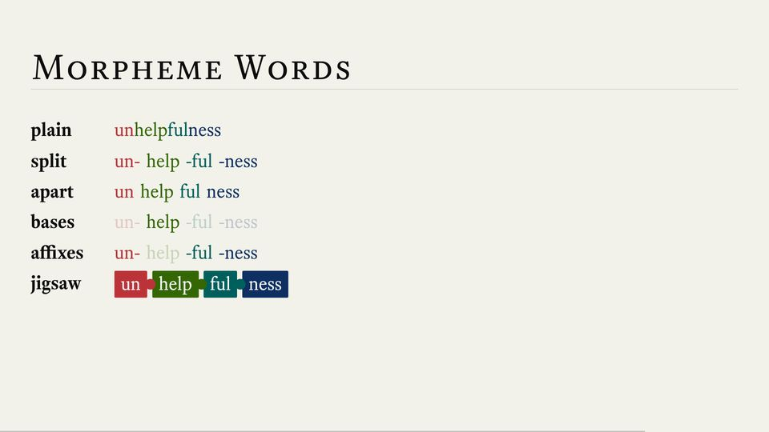
{jigsaw}
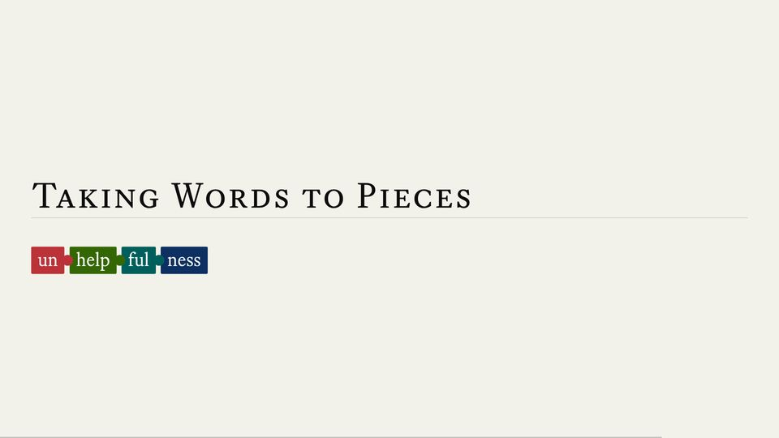
Morphing to [~un- + help + -ful + ~-ness]{jigsaw}: un and ness fade out
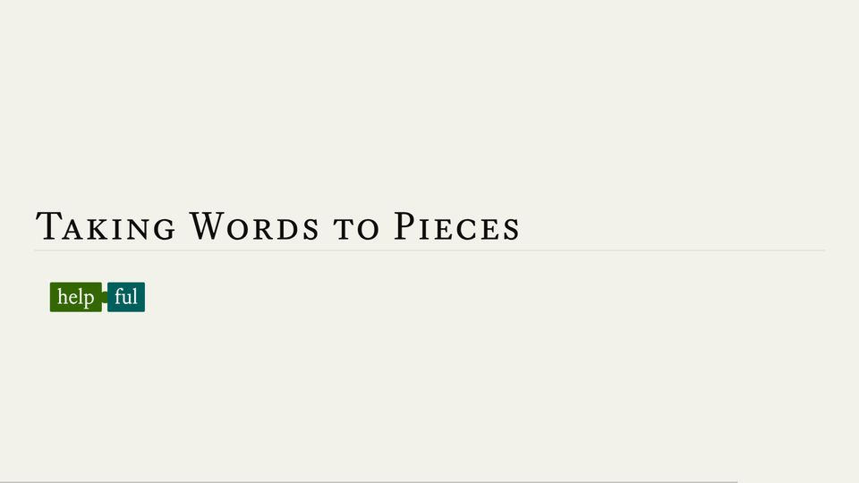
After the morph
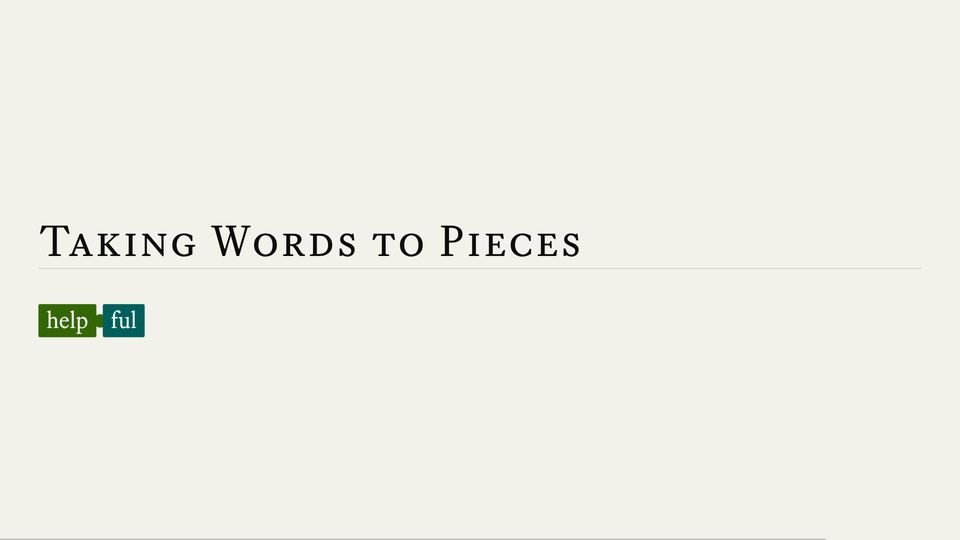
@slide morphemes=split on the next slide
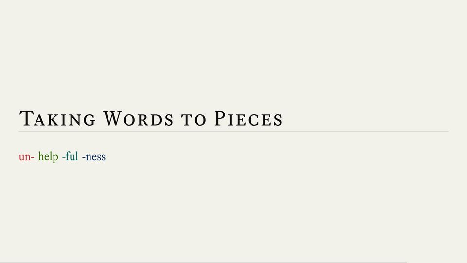
Options
State or option
Effect
{plain}
The joined word, pieces coloured.
{split}
Pieces apart, with their hyphens.
{apart}
Pieces spaced, with no hyphens.
{jigsaw}
Puzzle-piece shapes.
{bases}
Bases shown; affixes dimmed.
{affixes}
Affixes shown; bases dimmed.
~ before a piece
Hides the piece but keeps its id, so a morph fades it out.
@slidemorphemes=split
Sets the state for every morpheme word on the slide (any of the six states).
Palette
Colour names Built · phase 1a
One palette serves every theme. It is defined once in base.css as CSS variables, and every colour option and colour mark takes these names (or #RRGGBB). Each hue has a strong and a light strength, named name and light-name, plus white and black. accent gives the theme's accent colour in colour marks.
The values were set in phase 1a. White text on every strong colour reads at 5.4:1 or better (navy 13:1); each strong colour as text reads at 4.6:1 or better on every light theme's paper, the darkest being the Historical Thesaurus ground; dark ink on every light colour reads at 12:1 or better, and on Twilight the light colours read as text at 8:1 or better, so dark themes draw colour marks in them. The hues were chosen by a search that keeps each in its named range and pushes them apart: the closest two strong colours (orange and gold) differ by 15 on the CIEDE2000 scale, and every strong colour differed from every grammar colour by 13 or more (orange nearest the predicator, blue nearest the subject), measured against the grammar colours before phase 5B. Each colour has a darker partner, --p-NAME-deep, for ribbon tails and tab edges. The theme highlight (==x==) is light-gold, and gold at 70% on dark grounds. The UoG brand names are accepted as aliases everywhere: dark-red, dark-pink, dark-green, dark-blue, dark-purple, university-blue (navy) and light-yellow (light-gold).
red
red · #BB3339
light-red
light-red · #FFCAC7
orange
orange · #8C5300
light-orange
light-orange · #FBD5B0
gold
gold · #7B6A00
light-gold
light-gold · #F3E3A2
green
green · #346704
light-green
light-green · #CAE9BB
teal
teal · #005F5C
light-teal
light-teal · #B3E9E5
blue
blue · #333ECE
light-blue
light-blue · #D2DAFF
navy
navy · #0D2F61
light-navy
light-navy · #BBCEE7
purple
purple · #8A50AE
light-purple
light-purple · #E6CFF7
pink
pink · #AA3B73
light-pink
light-pink · #FCCBDE
grey
grey · #5F6061
light-grey
light-grey · #D3D2D0
white
white · #FFFFFF
black
black · #111111
The palette slide in Cream Serif
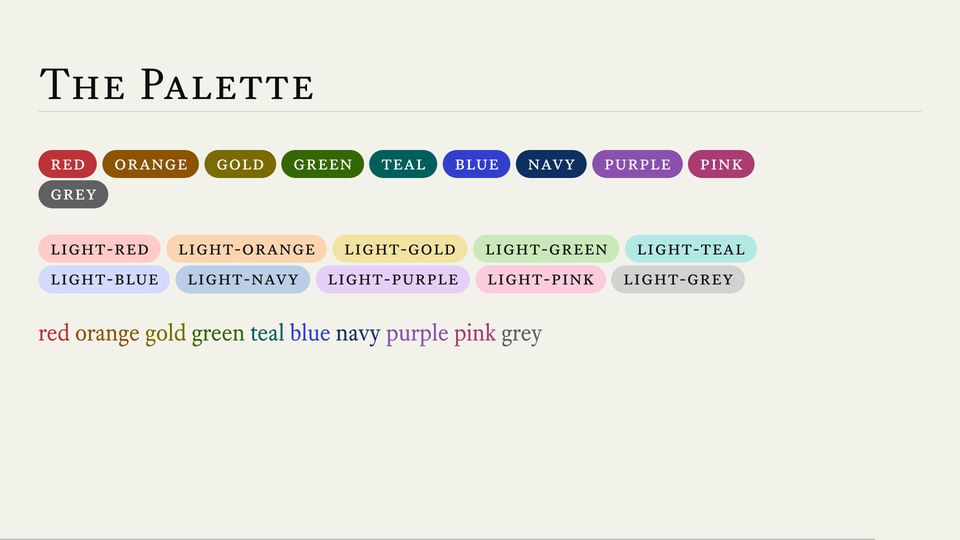
The same slide in Twilight (colour marks in the light versions)
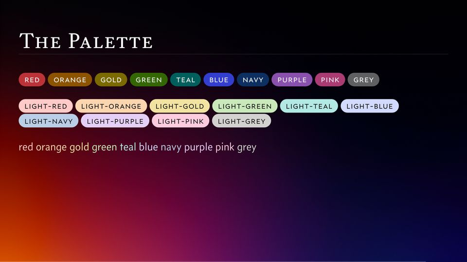
Corporate mapping (approved 30 October)
Name
Corporate value
Brand name
navy
#011451
University Blue
blue
#005398
Dark Blue
purple
#4C2683
Dark Purple
pink
#A60367
Dark Pink
green
#405D18
Dark Green
red
#7D2239
Dark Red
light-blue
#4DBBC6
Light Blue (a turquoise)
light-purple
#A5A1CE
Light Purple
light-pink
#E98BAF
Light Pink
light-green
#81C071
Light Green
light-gold
#F2D25C
Light Yellow
light-red
#E98BAF
none in the brand: borrows Light Pink (approved)
orange (also rust)
#BE4D00
Rust, from the 2025 brand palette (white on it 4.9:1). Old rust fills and Office orange keep this colour when converted, and the light-yellow grade strips become orange with white grades.
teal, gold, grey and their light versions, light-orange, light-navy
teaching values
none in the brand palette; converters avoid them in corporate decks
Ink on corporate fills follows the brand rule: white on the dark colours, University Blue on the light ones.
Converters snap old hex values to the nearest name, so converted decks use names too.
Grammar colours Built · phase 5B
The five grammar colours are separate from the palette. Themes and forms never override them, so each function keeps one colour everywhere. Colour is the only cue, by design. They are the variables --g-* in inc/css/base.css, with the dark set in dark.css and in palettes.css (the dark palettes of the forms).
Phase 5B replaced the earlier Okabe-Ito set. The new colours were chosen with Marc, who is red-green colour blind, to stay apart in red-green colour blindness as well as in normal vision: they differ on the blue-yellow axis and in lightness, which dichromats still see. Subjects are a dark blue, Complements a lighter violet, Objects a neutral teal, Predicators a dark rust and Adverbials a light gold. Every colour reads at 4.5:1 or better on every paper except the gold Adverbials (3:1 or better, the large-text standard), so the coloured functions in @passage are now bold. The grammar marks [S x] (built in phase 1a) produce the colours directly; the older **<span class="subject">…</span>** still works.
Light papers
S · Subject
.subject · --g-subject · #0303B5
P · Predicator
.predicator · --g-predicator · #9C3A0A
O · Object
.object · --g-object · #057B89 Subtypes: Od (direct object), Oi (indirect object)
Dark papers (shown on the Navy and gold paper, #16202E)
S · Subject
.subject · --g-subject · #4F8BFF
P · Predicator
.predicator · --g-predicator · #FF7A45
O · Object
.object · --g-object · #1FB59F
C · Complement
.complement · --g-complement · #C9B6FF
A · Adverbial
.adverbial · --g-adverbial · #F2D23C
Screenshots on this page made before phase 5B show the earlier colours; the mock-ups use the new light set.
The grammar-mark codes are S P O Od Oi C Cs Co A cj. As in the MandS 3 colour-coded passages: functions take their colour at the text's own weight (write **[S x]** for bold as well), conjunctions are bold in the ink with no hue, Od and Oi take the object colour and Cs and Co the complement colour. The passages' key has five classes, so "gives me a sandwich" has both objects in one colour there too. In @passage the coloured functions are bold (phase 5B), so the colour shows in thick strokes; until its step a function keeps the running text's colour and weight.
A colour-coded clause (Cream Serif)
Tamregardsmewith suspicion.
The armyseemedtired.
Forms and palettes Built · phase 5B
A form is a theme that takes all its colour from a palette. The form sets the type and the devices; the palette supplies every colour. Forms are the first section of the theme catalogue in inc/head.js (entries marked form: true, each with a default light palette and a suggested dark one), and they open and save like any theme: ?theme=plate, "theme": "plate" and pdfTheme take a form key, and lockTheme works with one. Each form file (inc/css/form-*.css) imports base.css and palettes.css and then sets its type and devices, drawing every colour from the palette roles. The Colourful and Classic themes are unchanged and take no palette.
The real rendering (the test deck, each form in its default light palette)
Plate and Key (plate), Silver and navy
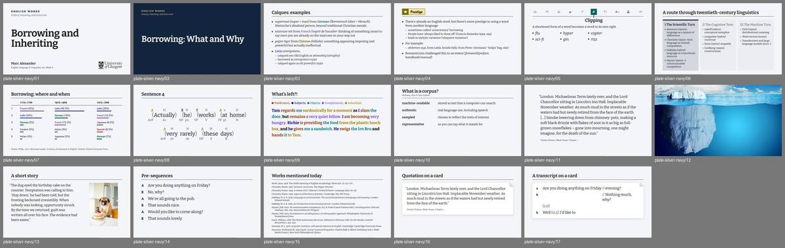
Fair Copy (fair-copy), Slate
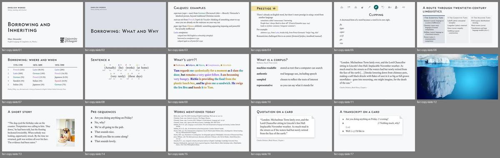
Attested Forms (attested), Silver and claret
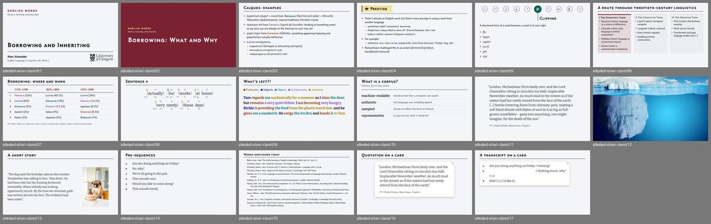
Thumb Index (thumb), Petrol
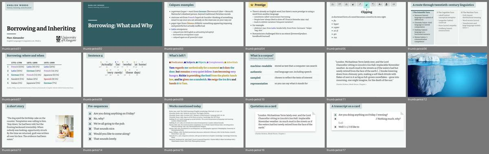
Quiet Index (thumb-quiet), Cream and oxblood
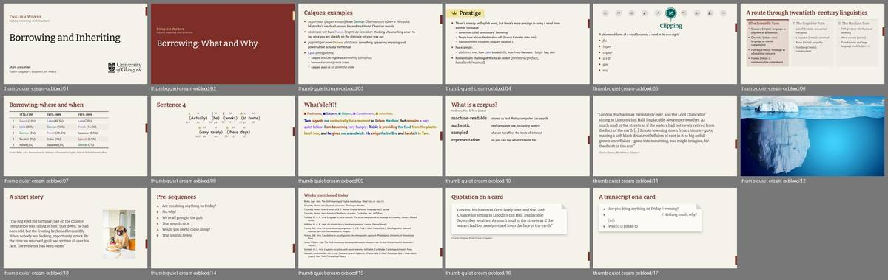
Lantern Slide (lantern), Silver and lamp
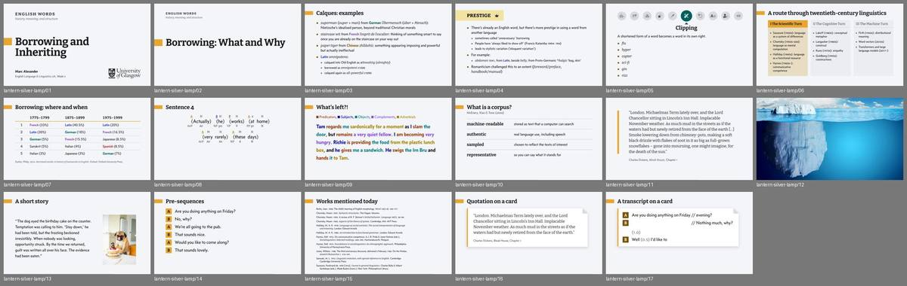
Three forms in their dark palettes
Plate and Key (plate), Navy and gold
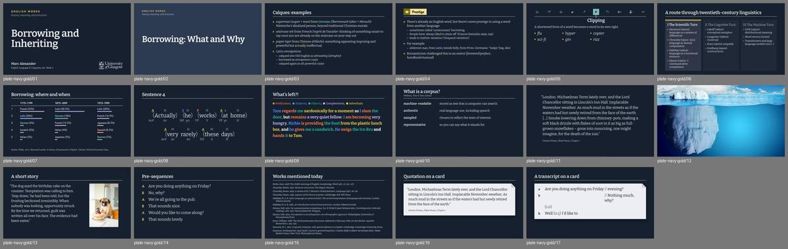
Fair Copy (fair-copy), Charcoal and coral
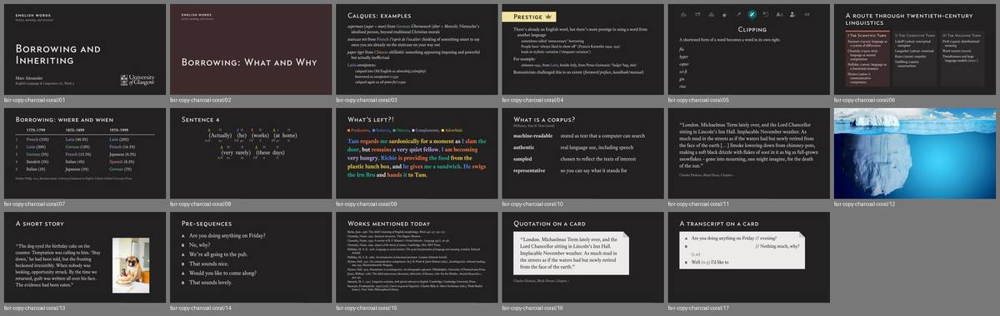
Lantern Slide (lantern), Claret and gold
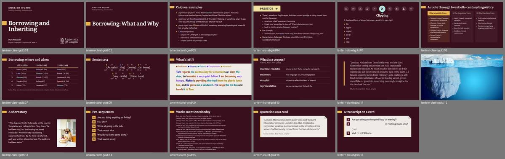
The fourteen palettes
Eight light palettes and six dark, in the menu's order. Each row shows eight of the roles: the paper, the ink, the accent, the tint (the current column), the quiet ground (the other columns), the section ground (section dividers and @slide contrast), the highlight and the card. Burgundy, Slate, Petrol and Terracotta take the colours of the Colourful themes of the same names; those themes stay as they are, typeface and all.
Palette
paper
ink
accent
tint
quiet
section
highlight
card
Light palettes
Silver and navy silver-navy
#F3F5F8
#15181E
#13243E
#D4D8DE
#EBEDF0
#13243E
#F3E3A2
#FFFFFF
Silver and claret silver-claret
#F3F5F8
#15181E
#8C2A3C
#E5D9DE
#EBEDF0
#7A2232
#F3E3A2
#FFFFFF
Burgundy from Colourful burgundy
#FAF5F0
#1C1A19
#6A1D30
#E6D7D5
#F2EDE8
#7D2239
#F3E3A2
#FFFFFF
Slate from Colourful slate
#F6F8FA
#1A1C20
#385174
#DBE1E7
#EEF0F2
#46628A
#F3E3A2
#FFFFFF
Cream and oxblood cream-oxblood
#F5F2EA
#1E1C19
#7D2E28
#E4D7CF
#EDEBE3
#7D2E28
#F1DE98
#FCFAF5
Petrol from Colourful petrol
#F5F9F8
#1A1D1D
#264D51
#D8E1E1
#EDF1F0
#2F5D62
#F3E3A2
#FFFFFF
Terracotta from Colourful terracotta
#F8F1E9
#1C1A19
#A8432A
#F0E0D6
#F0E9E2
#BF4F33
#F3E3A2
#FFFDFA
Silver and lamp silver-lamp
#F3F5F8
#15181E
#E8A630
#E8DCC2
#EBEDF0
#4A1124
#F6E2A8
#FFFFFF
Dark palettes
Navy and gold navy-gold
#16202E
#EEF0F3
#D9B95B
#2E3648
#202937
#2C3A52
#4E4526
#ECEEF1
Charcoal and brass charcoal-brass
#1F2326
#ECEAE6
#C8A464
#35342E
#282C2F
#2E3338
#4A4128
#EDEBE7
Charcoal and coral charcoal-coral
#222021
#EEEBEA
#F2706F
#3D2A2B
#2B292A
#3A2A2B
#5A3534
#EDEBEA
Plum and rose plum-rose
#2A2230
#ECE6EE
#D8B4C9
#413544
#332B39
#3C3044
#55405A
#EEEAF0
Claret and gold claret-gold
#3A0F1D
#F4ECE8
#E8B64A
#512523
#421926
#5A1A2E
#5E4420
#EFEAE6
Slate and silver slate-silver
#20252F
#ECEEF2
#A3BEDC
#313945
#292E38
#2C3342
#3C4A5E
#ECEEF1
How a deck chooses
A deck names its form and, if it wants something other than the form's default, its palette:
{ "theme": "thumb", "palette": "terracotta" }
The palette that opens is the first of these that applies:
?palette=NAME in the address (this visit only);
the visitor's pick for this deck, from the swatches in the menu, saved per deck (localStorage palette:/deck/), so each lecture in a series keeps its own;
"palette" in meta.json ("pdfPalette" in export: ?fragments=false and ?print-pdf);
the form's default.
The menu's Themes panel shows the palette swatches (the paper, with the accent in the lower half) only while a form is the theme; picking one saves it for the deck unless the address named a palette. Changing to a theme that is not a form drops the palette, and changing back to a form brings its palette back. Corporate decks take no palette. An unknown "palette" in meta.json is named in the console.
"formOptions": ["graphite"] adds the class form-opt-graphite to <html>, for a form to style; Fair Copy uses it for graphite headings.
Classes and roles
The palette is a set of classes on <html>: mga-form, pal-NAME and pal-light or pal-dark. Each pal-NAME block in palettes.css sets the roles; the mode blocks map the framework's own variables from them (paper, ink, the contrast pair, the highlight, the logos, the dark grammar set, the light colour marks on dark). A form puts its light and dark differences under html.pal-light and html.pal-dark.
The roles: --pal-paper, --pal-ink, --pal-ink2, --pal-rule, --pal-accent, --pal-mark, --pal-accent-ink, --pal-on-accent, --pal-tint (the current column), --pal-quiet (the other columns), --pal-section, --pal-on-section, --pal-series; the card roles --pal-card, -card-ink, -card-ink2, -card-accent, -card-fold and -card-highlight (for @card); and --pal-highlight with --pal-highlight-ink. A form takes every colour from these, never a hex value of its own.
Changing a palette
palettes.css is generated: do not edit it by hand. Edit the table in scripts/build-palettes.py and run it. It rewrites palettes.css and reports any pairing of text and ground that falls short of 4.5:1 (the Terracotta divider is title-size, so 3:1 applies there).
Layouts (retired) Retired · phase 5B
The layouts were retired in October 2026, and every deck now uses the Standard arrangement; the forms took over the layouts' job. Spine, Masthead and Classical (and layout-standard.css, which added nothing) are in _to_delete/retired/. head.js no longer reads ?layout=, a saved layout or "layout" in meta.json, and the menu's layout picker has given way to the palette swatches. The --L-ground/--L-on-ground variables in base.css and fitColumnHeadings in directives.js are left in place, unused.
Slide flags, builds and morph
Slide flags: @slide
@slide takes one or more flags, anywhere in a slide. Flags combine freely, and classes from @slide and from directives merge.
Kept in the source; skipped in the show and the PDF.
Built · phase 1b
nohandout
Shown when presenting; left out of the student version and the Moodle PDF.
Built · phase 1b
static
Nothing on this slide builds unless marked.
Built · phase 1b
build
Lists build item by item even when the deck's listBuild is false.
Built · phase 1b
build=auto
Runs the slide's builds without clicks.
Built · phase 1b
statement
One large centred sentence or quotation.
Built · phase 1b
activity
Room activity: lighter ground, accent bar at the screen edge.
Built · phase 1b
text=N
Corporate only: body text size for this slide.
Built · phase 4
placeholder, textbox
Corporate only: the template placeholder instead of a text box, or the reverse.
Built · phase 4
The real rendering (specimen deck, Cream Serif)
@slide statement
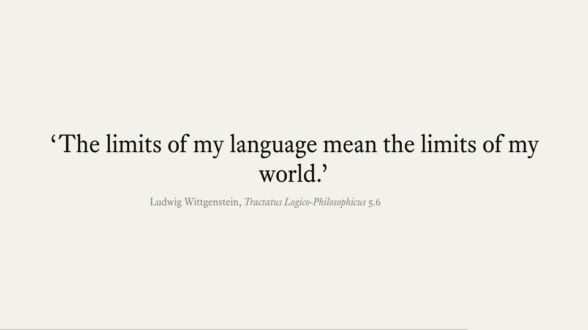
@slide activity
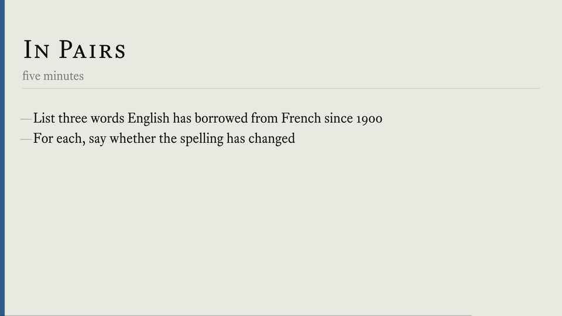
Built in phase 1b: build=auto steps through the slide's builds 0.9 seconds apart, starting just after the slide arrives, and stops when the slide is left (and in export). hidden slides are also left out of the handout; nohandout slides are left out of the handout now and of the student version when the export page arrives. text=N, placeholder and textbox are accepted now and take effect with corporate mode. centred did not in fact centre before phase 1b (the slide was the full stage height); it does now, and statement uses the same rule. The layouts have since been retired (October 2026, Layouts): every deck uses the Standard arrangement.
Mock-ups drawn before the build
@slide statement
“The meaning of a word is its use in the language.”
Wittgenstein, Philosophical Investigations §43
@slide activity
Try it
Find three blends in today's headlines
Write each as x + y
@slide contrast
Three questions
What changed?
When?
Why?
Builds Built · phase 1b
A build is a step that appears on a click. Builds are set at five levels:
Deck default. Teaching decks build lists item by item with a fade; corporate decks build nothing unless asked, and their builds appear instantly. Set with the meta.json keys listBuild and buildStyle.
Block. Every block directive accepts build (its parts one per click, in reading order). build= names other orders where they exist: auto, level, up, columns, context. Tiered directives (@parse, @passage) use steps="...".
Single item.build on a card line (:: red build) or a @note; the click marks inline ({==x==} and the others).
Groups.@pause (everything after it on one click); + at the start of a @marks line.
Order: steps follow reading order; a block's steps come after the list items before it; a @note joins the step of the list item before it (this already exists). In export, the final-state PDF shows every step and the per-build PDF shows each one. fragment stays accepted on the existing image directives as a synonym of build.
The real rendering (@pause on the specimen's Pause slide)
Start
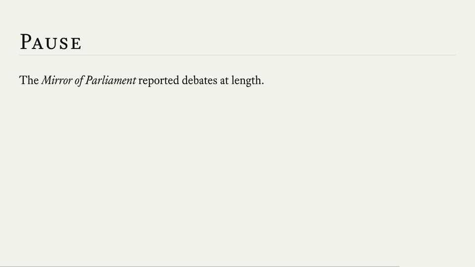
Click 1: the list arrives whole
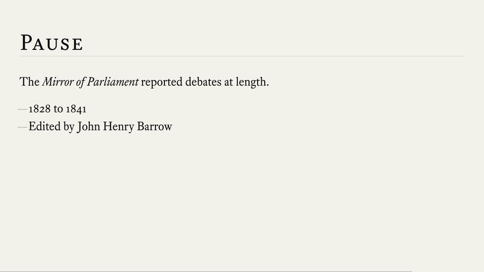
Click 2
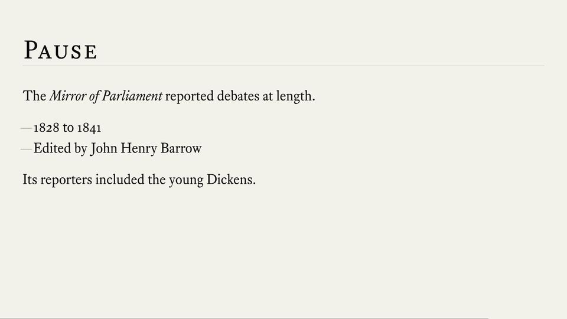
How it works (phase 1b): a small plugin runs after the markdown is rendered and before reveal counts the builds. It applies listBuild, @slide static and @slide build, turns each @pause into one group, and on slides with groups or stepped blocks gives every build an explicit place in reading order, so a block's steps (from phase 2) come after the list items before it. "buildStyle": "appear" makes builds arrive instantly.
Morph Built · phase 2b
A morph slide animates from the slide before it: matching elements move and resize to their new places, unmatched outgoing elements fade out, and new ones fade in. It replaces Keynote's Magic Move and PowerPoint's Morph.
## Four criteria
[[Orthographic]] [[Phonological]] [[Grammatical]] [[Semantic]]
---
@slide morph
## [[Orthographic]]
* The *b* in *debt* was added on the model of Latin *debitum*
Slide 1
Four criteria
✒Orthographic♪Phonological{}Grammatical✱Semantic
Slide 2, after the 1 s morph
✒Orthographic
The b in debt was added on the model of Latin debitum
Slide 2, Click 1
✒Orthographic
The b in debt was added on the model of Latin debitum
What moves: the Orthographic tag travels from the row into the heading position and becomes the ribbon heading. The heading "Four criteria" and the other three tags fade out. The bullet builds in on a click, so it is left out of matching.
The real rendering (specimen deck, Cream Serif)
@menu why all style=tabs centre
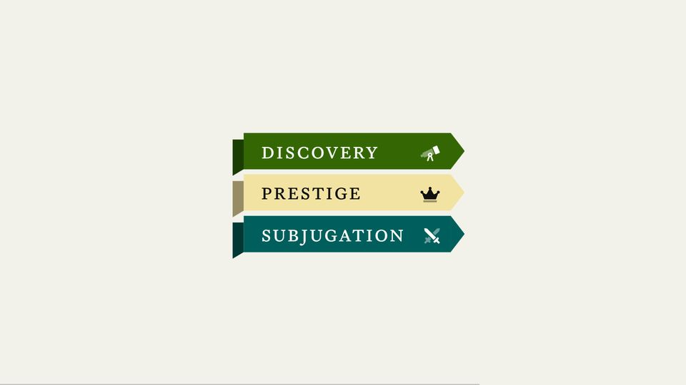
0.3 s into the morph to ## [[Discovery]]: the tab moves, the others fade out
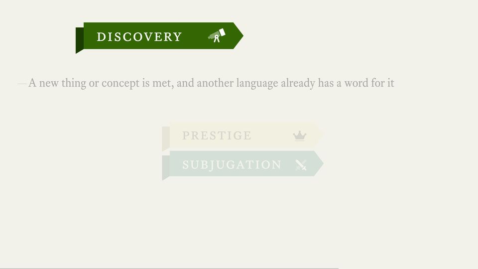
The ribbon heading after the morph
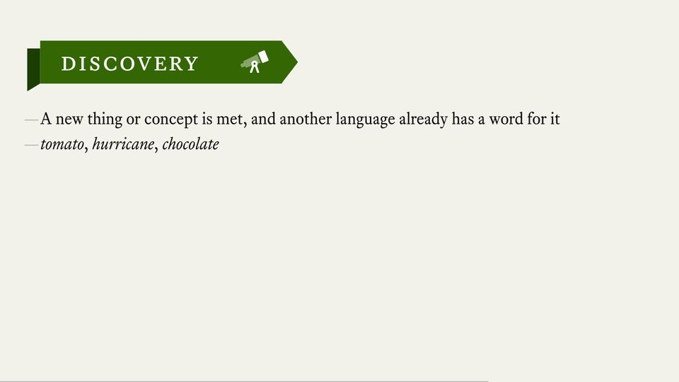
The [[cat]] sat on the [[mat]].0.4 s into @slide morphOn the [[mat]] sat the [[cat]].
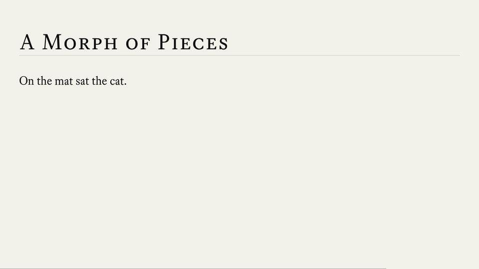
@slide morph words=loose, 0.4 s in
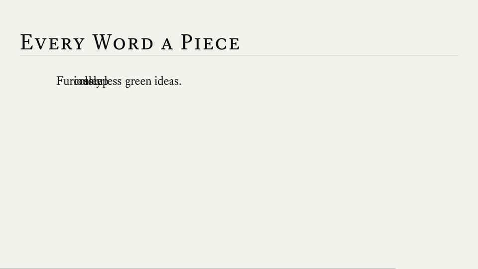
After the words morph
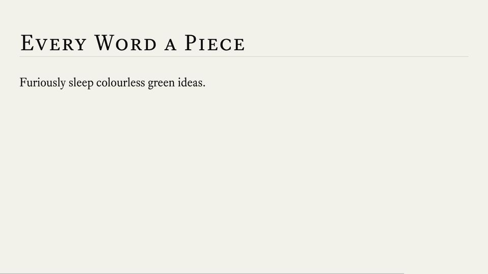
What matches
Identical headings, paragraphs and images match with no markup.
[[pieces]] match by text, or by id with [[x|id]].
@slide morph words matches every word (words=loose ignores punctuation and case).
hold id= matches images, on @image-left/@image-right, @image and @image-seq lines (a held @image is drawn in the slide frame, so it can move; the file may change between the two slides).
Elements that build in on the new slide are left out of matching.
These morph by themselves, with no @slide morph: @menu, @marks steps, @zoom, hold, @transcript morph and overlay, and morpheme words across morph slides. Converter rule: a PowerPoint Morph that matches nothing meaningful becomes @slide fade.
As built: words and morpheme pieces move without being scaled, so their letters never stretch; an element that builds in on the new slide is left out of matching unless its partner on the old slide was itself a build (reveal then keeps it shown, so nothing is stepped through twice); outgoing elements with no partner fade out over 0.6 of the morph. A slide newly linked as the slide before a morph cannot chain into an unrelated neighbour. In the export PDF nothing animates between slides: each is captured in its final state.
The 18 core directives
SPEC.md section 4 settles the first seventeen; @card joined them in phase 5B. @cards and @columns are one parser with two names, so the 18 entries below carry 19 names. All are built.
@cards and @columns
Built · phase 2a
Sets out parallel items side by side, as boxed cards (@cards) or unboxed columns (@columns), so the audience can compare them at a glance.
Replaces in PowerPoint/Keynote: text boxes side by side, two-column text, boxed cards, headed columns, header-bar cards, icon cards, stat panels, process boxes with arrows, grade strips, speech bubbles, slim banners, SmartArt rows.
Also searched as: columns, cards, boxes, panels, grid, side by side, comparison, card row, multi-column, text columns.
Syntax
## Linguistics before and after Saussure
@columns cols=3
### Before 1900
* Comparative philology
::
### Around 1900
* Saussure's *Cours*
:: accent
### After 1950
* Generative grammar
@end
Example of the result
The example
Linguistics before and after Saussure
Before 1900
Comparative philology
Around 1900
Saussure's Cours
After 1950
Generative grammar
Styles and block options
style=box
Synchronic
One state of a language
Diachronic
Change over time
style=plain
Synchronic
One state of a language
Diachronic
Change over time
style=bar
Synchronic
One state of a language
Diachronic
Change over time
style=stat
96%
Fewer files
83 files to 3
4
Documents
from 109
style=strip
A1 A2
Excellent work in every respect
B1 B2
Very good work with minor weaknesses
arrows
Before
→
During
→
After
stack
Phoneme
Morpheme
Word
Phrase
:: dim on the middle card
Sound
Form
Meaning
The real rendering (specimen deck, Cream Serif)
@columns cols=3, :: accent on the last
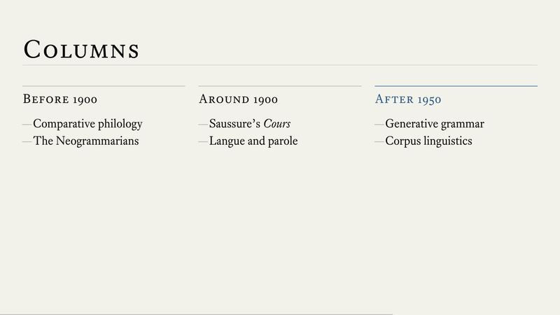
Tags, a #### subtitle, foot, icon=
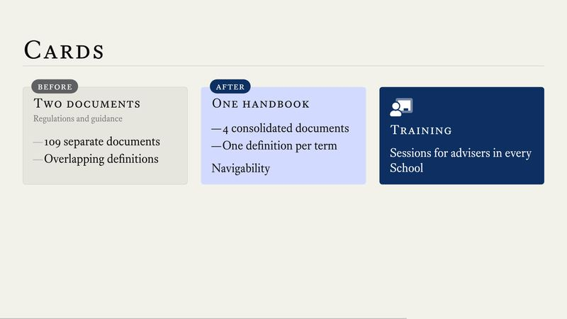
style=bar widths=62,38
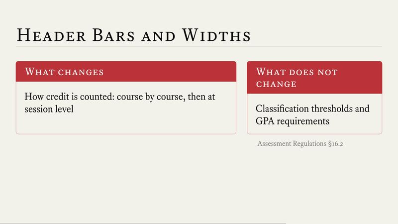
arrows build, every card shown
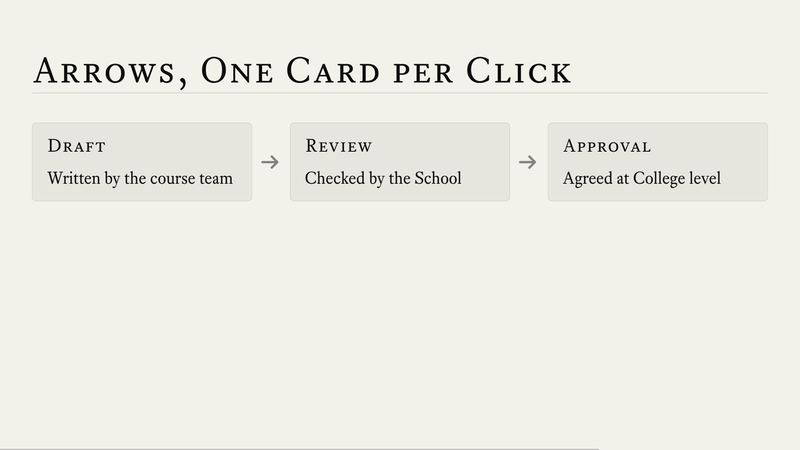
stack arrows
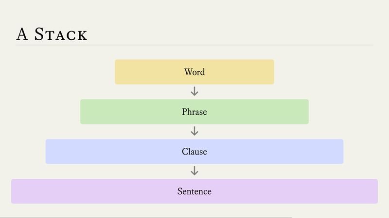
style=strip
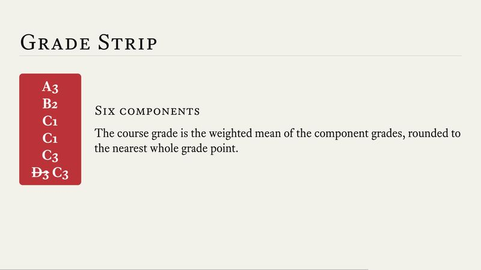
@columns cols=2 with no ::: flowing
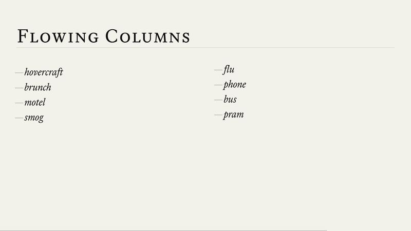
Options
Option
Effect
cols=N
Number of columns. With no :: lines, @columns flows its content into N CSS columns (default 2); list items never split across columns, and list builds keep reading order.
widths=62,38
Relative column widths.
style=box
Filled or tinted panel. The default for @cards.
style=plain
Unboxed column with a rule above the ###. The default for @columns.
style=bar
The colour fills a bar holding the ###; the body is unfilled (corporate header-bar columns).
style=header
The colour fills a rounded header holding the ###, centred; the text sits below it on the slide, with no box (Dumfries 2, 5, 6, 20). Built · phase 6b
A narrow coloured column of tokens beside text (the corporate grade strips); tokens split at ,.
height=fill, height=auto
Cards fill the available height, or take their content's height. In corporate mode a block shares the body's free space unless height=auto is written out: then it keeps its content's height (a band above or below the main cards).
build
One card per click.
arrows
An arrow between cards (before and after, process rows).
stack
Centred full-width rows of increasing width.
name=ID
Names the block so it can be repeated later in the deck (named blocks).
Card flags, after ::
a colour name or #hex
Fills the card; the ink is chosen automatically for contrast. Example: ::light-blue.
wide
The card takes a row of its own.
build
This card appears on its own click: ::redbuild.
accent, dim
Teaching: the card is highlighted, or greyed.
foot
The card's last paragraph is pushed to the bottom.
answer
The card is hidden in the student version.
icon=NAME
A Font Awesome icon on the card (any icon of the licensed set; add its codepoints to base.css). In corporate mode it sits beside the heading.
disc=COLOUR
With icon=: the icon on a disc of that colour, beside the heading (Dumfries 14). Built · phase 6b
:: alone (corporate)
Takes the next colour from cardColours in the corporate settings.
Inside a card
#### after ###
A light subtitle under the card heading.
[[AFTER]]{purple} on the first line
Drawn as a pill at the top left of the card.
#### before ###
Corporate mode only, to reproduce existing slides: a small line above the heading. Never in teaching decks (no eyebrows).
h=, text=, head=, radius=
Converter-only options. Never written by hand.
Content before the first :: line is the first card, with no flags. Corporate decks write :: colour before every card, including the first. Corporate mode styles the same markup to the University template; there is no separate corporate card directive. (@card, built in phase 5B, is a different thing: one turned-corner callout.) In style=strip the first card holds the tokens on one line, separated by , , and the second card the text beside them.
@card
Built · phase 5B
Sets anything (a transcript, a quotation, an image with text, notes) on a card with its top right corner turned down, so it stands apart from the slide as a callout.
Replaces in PowerPoint/Keynote: a callout box, a note card laid on the slide, a quotation or transcript set on a white panel.
@card
@transcript
a: Are you doing anything on Friday?
@end
The real rendering (the test deck)
A transcript on a card: Attested Forms, Silver and claret
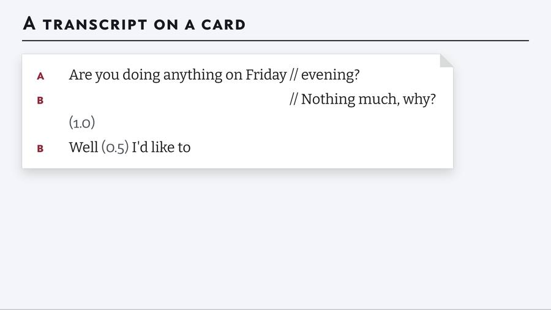
Options
Option
Effect
Body
Any markdown, including other directives, to @end or the end of the slide. A card with nothing in it is an error slide.
@quote...card
A quotation on the card (see @quote). It keeps @quote's own placement: centred when the slide has no heading, in the flow when it has one.
Each form draws its own card from the palette's card roles (--pal-card, --pal-card-ink, --pal-card-fold and the rest; see Classes and roles); every other theme gets a plain one, a lightened paper with a soft shadow and the corner turned down. The card is the class md-slip.
@terms
Built · phase 2a
Pairs each term with its gloss in two aligned columns, so the audience reads a list of words and their definitions or analyses.
Replaces in PowerPoint/Keynote: green and grey term rows, small-caps term lists, glossary tables, answer columns.
Also searched as: definition list, glossary, term and gloss, word list, vocabulary list, two-column list, answers.
The gloss column is an answer: a click step when presenting, hidden in the student version.
With build=columns nothing shows at the start: each term arrives on a click of its own, then each gloss (English Words 4, slides 26 to 29). With answers as well, the glosses are also hidden in the student version.
@stats
Built · phase 2a
Shows a few key figures as large numbers with a label and an optional note, so the audience takes in the size of each at once.
Replaces in PowerPoint/Keynote: stat panels, big numbers with captions, KPI boxes, number callouts.
Also searched as: big number, statistic, figure, percentage, metric, KPI, headline number.
Syntax
@stats
96% :: Fewer files :: 83 files to 3
[93%]{green} :: Reduction in text :: about 9,800 words now
Example of the result
The example
96%
Fewer files
83 files to 3
93%
Reduction in text
about 9,800 words now
The real rendering (specimen deck, Cream Serif)
@stats with a colour mark and a tag as the note
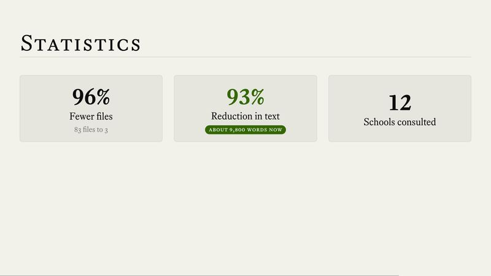
Options
Option
Effect
Line format
number::label::note; the note is optional.
[93%]{green}
A colour mark on the number colours it.
A note written as a tag
[[note]]{green} in the note field becomes a pill.
build
One figure per click (the general block build).
Drawn as @cards style=stat. Figures here are lining and tabular, as data. In corporate mode the labels are set in Noto Sans Light.
@ex
Built · phase 2a
Numbers linguistic example sentences in sequence through the deck, with judgement marks hanging in the margin, so examples can be referred to by number.
Replaces in PowerPoint/Keynote: example sentences typed with manual numbers, asterisked ungrammatical examples, tab-aligned glosses.
Also searched as: examples, numbered examples, interlinear, judgement, grammaticality, asterisk, ungrammatical, starred example, acceptability.
Syntax
@ex
The dog eyed the birthday cake. :: canonical order
*a five beautiful days :: numeral before determiner
(b) There will be a sponsored *fast* tomorrow. :: (N)
Example of the result
The example (the first @ex in the deck)
(1)The dog eyed the birthday cake.canonical order(2)*a five beautiful daysnumeral before determiner(b)There will be a sponsored fast tomorrow.(N)
The real rendering (specimen deck, Cream Serif)
The first @ex in the deck
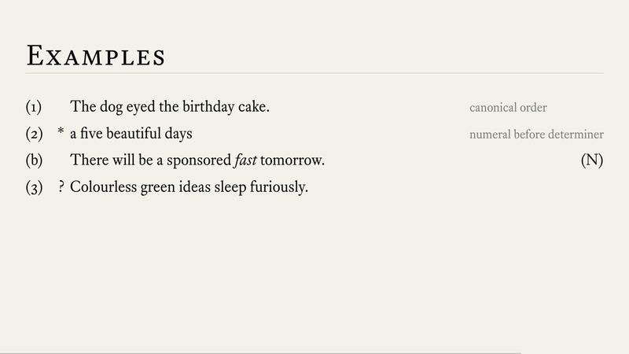
Options
Option
Effect
Judgement mark
*, ?, ?? or # glued to the first word hangs in the margin. A list marker needs a space after it, so the two never collide.
(b) at the start of a line
Sets the label by hand.
Second field
A gloss or a right-aligned tag.
numbers=off
No numbers.
build
One example per click.
start=N
Starts the numbering at N.
A hand-set label such as (b) replaces the number for its line and does not advance the count. A line that starts with an italic word (*word*) has no judgement mark. A named block repeated later (@ex name) keeps its original numbers.
@tree
Built · phase 2a
Shows a hierarchy from indented lines, as a left-to-right diagram with braces or as an indented outline, so the audience sees how categories divide.
@tree style=diagram build=level
FTA
commit the FTA
directly
baldly %%(without redressive action)%%
with politeness
indirectly
don't commit the FTA
Example of the result
Start
FTA
commit the FTA
directly
baldly (without redressive action)
with politeness
indirectly
don't commit the FTA
Click 1
FTA
commit the FTA
directly
baldly (without redressive action)
with politeness
indirectly
don't commit the FTA
Click 2
FTA
commit the FTA
directly
baldly (without redressive action)
with politeness
indirectly
don't commit the FTA
Click 3
FTA
commit the FTA
directly
baldly (without redressive action)
with politeness
indirectly
don't commit the FTA
The real rendering (specimen deck, Cream Serif)
build=level, click 1
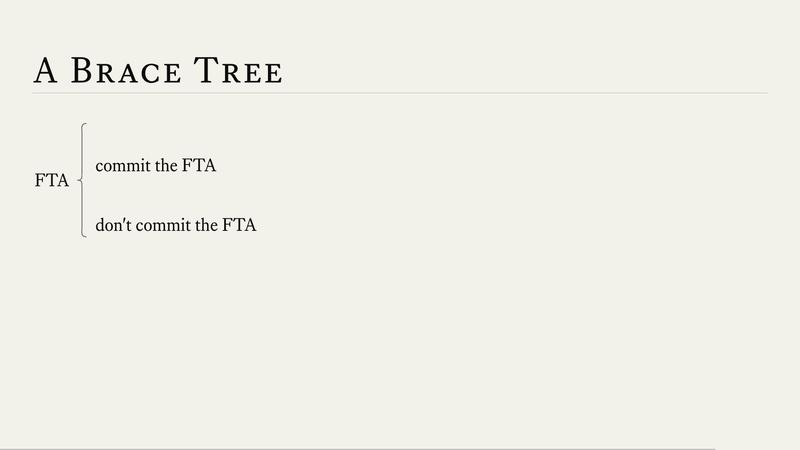
Every level
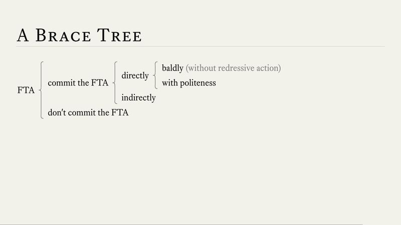
style=outline with codes
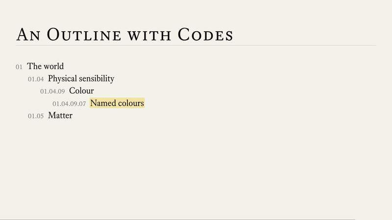
Options
Option
Effect
Indentation
Descent: a line indented further than the line above is its child.
style=diagram
Left to right, with a brace before each group of children. Nodes that are tags are drawn as pills, which gives the pill taxonomies.
style=outline
An indented outline with optional category codes, growing level by level (Historical Thesaurus categories).
build
One node per click.
build=level
One level per click.
build=up
Builds from the leaves up.
==...==
Highlights a node.
Names in a text set
Coloured automatically, with no markup (see @set).
Etymology trees drawn top-down with lines are not in the core. Outline lines are written code :: label (01.04 :: Physical sensibility); the code is set small and subtle before the label. The frames assume the root shows at the start.
@set and tags
Built · phase 2b
Defines a deck's labelled categories once, each with a colour and an icon, so every tag, ribbon heading and menu that uses a label draws it the same way.
Replaces in PowerPoint/Keynote: ribbon labels, coloured tags, category colours set by hand on every slide, icon labels.
@set criteria
Orthographic :: green :: pen-nib
Phonological :: teal :: volume
Grammatical :: light-gold :: brackets-curly
Semantic :: blue :: lightbulb
@set languages text
Latin :: blue
French :: purple
Greek, Hellenic :: green
Using the sets on a slide:
## [[Orthographic]]
* The *b* in *debt* was added on the model of [[Latin]] *debitum*
* Respellings: [[Orthographic]] [[Phonological]]
Example of the result
The slide
✒Orthographic
The b in debt was added on the model of Latindebitum
Respellings: ✒Orthographic♪Phonological
The real rendering (specimen deck, Cream Serif)
Tags from @set criteria; a text set ([[French]], [[Latin]], [[Greek]], an alias); [[GPA 9.0]]{grey}; an optional stage
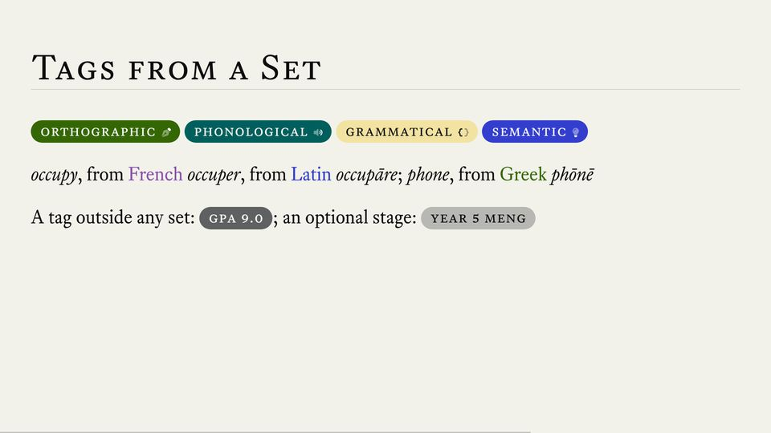
## [[Discovery]]: the ribbon heading
Options
Option
Effect
Item line
Label::colour::icon. The icon is a Font Awesome name.
Aliases
Comma-separated in the label field: Greek,Hellenic::green.
Fourth field optional
A paler stage of the item.
text after the set name
A text set: [[Latin]] is coloured text, not a pill; inside @tree and @marks labels, names in a text set are coloured with no markup.
[[Label]]
Anywhere: a tag pill in the set's colour, with its icon.
##[[Label]]
The ribbon heading. On a morph slide the tag moves into the heading (see Morph).
[[GPA9.0]]{grey}
A tag outside any set takes its colour from attribute braces (braces also override a set's colour).
##[[Draft]]{red}
A heading that is one coloured tag is a ribbon heading too.
##[[DelayedAssessmentPermits]]{light-purple}
Corporate mode: the title on a coloured bar.
A set is not displayed where it is written. Sets are collected from the whole deck, and from included files, before slides are expanded, so a course can define its sets once in a shared file and @include it. Sets also drive @menu. A set may come after the slides that use it, and a slide that holds nothing but sets is dropped, so a deck can keep its sets on a slide of their own. The layouts have since been retired (October 2026, Layouts), so the Spine case no longer arises.
@menu
Built · phase 2b
Draws a set as a navigation element that holds still across slides, with the current item lit, so the audience always knows where they are in a sequence.
Replaces in PowerPoint/Keynote: icon bar, icon strip, navigation circles, ribbon tab stack, progress tracker, agenda slide with the current item highlighted.
Also searched as: navigation, agenda, roadmap, where we are, signpost, sections, tabs, steps, tracker, contents strip.
Syntax
@menu criteria all centre
---
@menu criteria 2
## Phonological
Example of the result
Slide 1: @menu criteria all centre
✒
Orthographic
♪
Phonological
{}
Grammatical
✱
Semantic
Slide 2: @menu criteria 2, after the morph
✒
Orthographic
♪
Phonological
{}
Grammatical
✱
Semantic
Phonological
x
@menu criteria 2 style=tabs
Grammatical
Word class and inflection
OrthographicPhonologicalGrammaticalSemantic
@menu criteria 2>3 style=steps
Orthographic
▶
Phonological
▶
Grammatical
▶
Semantic
From sound to meaning
The real rendering (specimen deck, Cream Serif)
@menu neologisms all centre
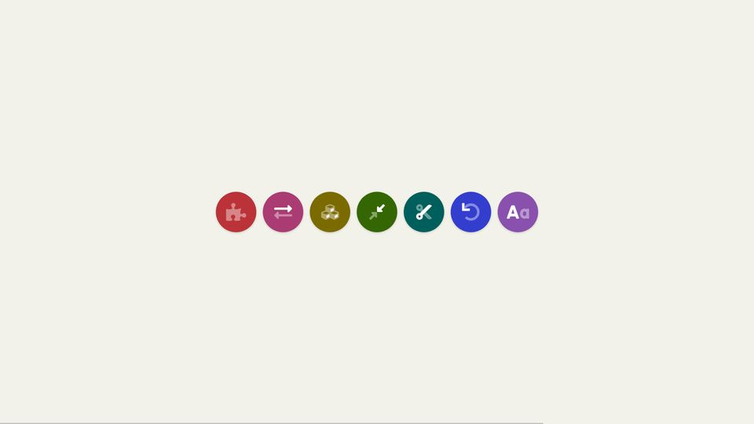
@menu neologisms labels, after the click
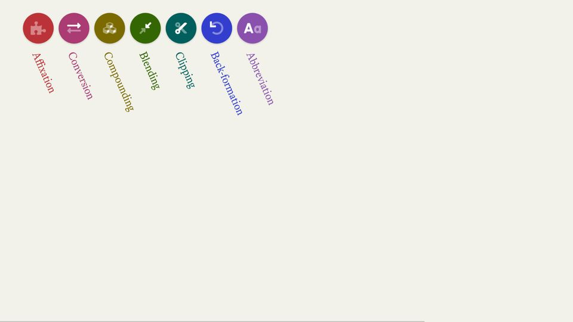
@menu neologisms 1 and ## Affixation
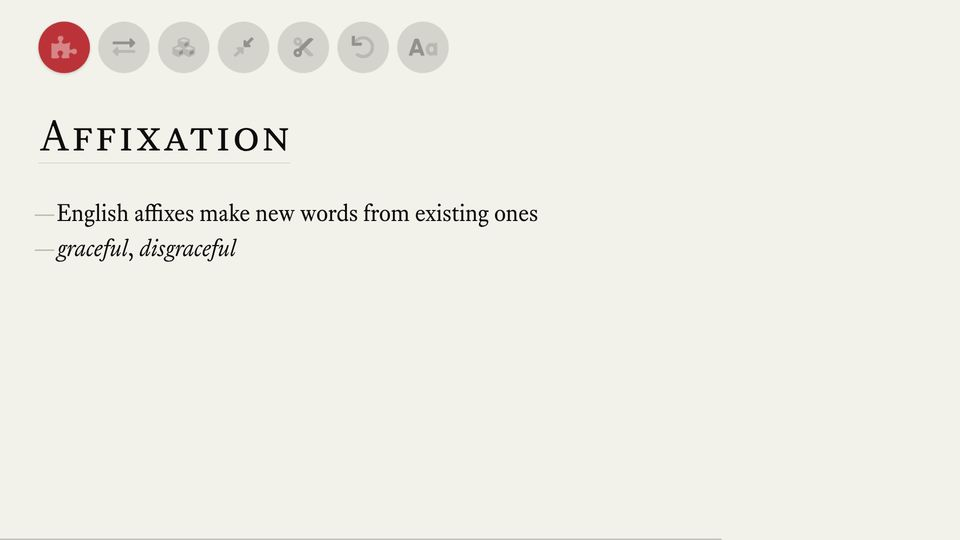
0.3 s into the morph to item 2: the heading moves alongItem 6: past the middle, the heading ends under the itemstyle=tabs all centre@menu honours 2>3 (steps, no icons); Year 5 MEng is optional@menu honours 4
Options
Option
Effect
style=strip
Circles with icons. The default when the set's items have icons.
style=tabs
A vertical stack of ribbon tabs (plain rectangles: the pointed end and folded tail were removed in November).
style=steps
Step boxes with arrows (the corporate progress tracker). The default when the items have no icons.
N
Item N lit, the rest grey.
4,5
Items 4 and 5 lit.
2>3
The arrow between items 2 and 3 lit.
all
Every item lit.
labels
All lit; the labels appear on a click. labels=static shows them from the start.
centre
The menu at mid-slide.
heading=build
The heading after the menu builds in on a click instead of moving along by morph.
As built: consecutive slides with a menu of the same set morph by themselves, every item keeping its set id (the same id as the set's tag, so a tab can morph into a ribbon heading on a @slide morph slide). The heading after a menu with one lit item, or a lit arrow, sits under it and moves along by morph (Q3, as recommended): it aligns with the lit item's nearer edge, left-aligned under an item in the left half of the strip and right-aligned under one in the right half. A form can centre it under the item instead by setting --menu-head-align: centre on .md-menu-head (phase 5B). The layouts, and with them the Spine case, were retired in October 2026 (Layouts). 2>3 lights the arrow only, not the steps either side, as on the Session 2 tracker slides (S2 18). A lit step or arrow takes the item's colour, or the theme accent if the item has none. labels belongs to strips; tabs and steps always show their labels. Icons come from the self-hosted subset in base.css (local preview names any that is missing).
@marks
Built · phase 2b
Draws rings, boxes, labels and shading on an image one step at a time, so the audience looks at the part of the image being discussed.
Replaces in PowerPoint/Keynote: rings and circles drawn over maps, boxes over scans, spotlights, darkened bands, callout labels, a highlight box that moves (Morph).
@marks ./img/nw-europe.svg alt="Map of north-west Europe"
ring 47,52 r=8 green "Dutch"
ring 55,50 r=15 navy "German"
+ ring 44,45 r=4 gold "West Frisian"
dim y=40,55
box 10,20 w=30 h=12 red id=b1
box 40,20 w=30 h=12 red id=b1
label 20,80 "Very frequently used" rot=-80
Example of the result
Start
image: map of north-west Europe
Click 1
image: map of north-west Europe
Dutch
Click 2 (the + line joins)
image: map of north-west Europe
Dutch
German
West Frisian
Click 3
image: map of north-west Europe
Dutch
German
West Frisian
Click 4
image: map of north-west Europe
Dutch
German
West Frisian
Click 5 (box b1 moves)
image: map of north-west Europe
Dutch
German
West Frisian
Click 6
image: map of north-west Europe
Dutch
German
West Frisian
Very frequently used
The real rendering (specimen deck, Cream Serif; the image is a column of the Mirror of Parliament)
Start: the image aloneClick 1: box ... navy "Speaker" id=spClick 3: dim y=68,81.5 with + ring joinedClick 4: box ... id=sp again: the box movesClick 6: zoom 70,76 2.2all, with a rotated label
Options
Option
Effect
Positions
Percent of the image, across then down (as @zoomfocus=).
ringx,yr=Ncolour"label"
A ring centred on x,y; N is a percentage of the image width. w=h= instead of r= gives an ellipse. pos=above|below|left|right places the label (default above).
boxx,yw=Nh=Ncolour
A box; x,y is its top left corner, w and h percentages of the image width and height.
labelx,y"text"
A text label; rot=-80 rotates it.
dimy=a,b, dimx=a,b
Darkens everything outside a horizontal or vertical strip; dimx,yw=h= darkens outside a box.
zoomx,yscale
Zooms into a point.
+ at the start of a line
Joins the step before (both appear on one click).
all
Shows every mark at once.
id=NAME
A later line reusing the id moves that mark on its click, keeping its colour and label unless the line gives new ones.
alt="..."
Required, as on every image directive.
As built, the marks and their steps live on one slide: each line is a click (a hidden build), and a mark that moves glides to its new place, so the steps sit in the slide's ordinary build order and the export shows the final state. Labels of names in a text set are coloured by the set. Add ?coords to the address (in preview or on mga.is) and click an image: a small label shows the point in percent, and it is logged and copied, ready for a @marks line or @zoom focus=.
@kwic
Built · phase 2a
Shows concordance lines aligned on the node word, with the edges fading, so the audience reads down the column of contexts.
Also searched as: concordance, KWIC, key word in context, corpus lines, collocation, collocates, node word.
Syntax
@kwic build=context
the hammer was used to | strike | the nail into the wall
workers voted to | [strike]{red} | over pay and conditions
Example of the result
Start
the hammer was used tostrikethe nail into the wallworkers voted tostrikeover pay and conditions
Click 1
the hammer was used tostrikethe nail into the wallworkers voted tostrikeover pay and conditions
The real rendering (specimen deck, Cream Serif)
build=context: startClick 1prose, and window=3
Options
Option
Effect
Line format
leftcontext|node|rightcontext.
prose
Running lines cut at both edges, node in bold.
build=context
The node column first, the contexts on a click.
window=4
A collocate window, with positions -4 to +4.
==x== in a context
Marks a collocate.
{==x==}
Marks a collocate on a click.
@parse
Built · phase 3
Draws a labelled bracketing of a sentence, with word-class, phrase and function labels above and below each word, and reveals the tiers one at a time so the audience follows the analysis step by step.
Replaces in PowerPoint/Keynote: Keynote grammar analyses built with text boxes and lines, labelled bracketing slides, the LaTeX \gra analyses.
Also searched as: grammar analysis, labelled bracketing, parsing, syntax, clause analysis, phrase structure, constituents, form and function, Corbett and Kay, Leech, word class labels, MCl, NP, VP.
All tiers shown (Corbett and Kay centred layout, Cream Serif)
S(NP
MThed
HdogN
)
P(VP
HeyedV
)
O(NP
Mthed
MbirthdayN
HcakeN
)
Start
S(NP
MThed
HdogN
)
P(VP
HeyedV
)
O(NP
Mthed
MbirthdayN
HcakeN
)
Click 1: class
S(NP
MThed
HdogN
)
P(VP
HeyedV
)
O(NP
Mthed
MbirthdayN
HcakeN
)
Click 2: mh
S(NP
MThed
HdogN
)
P(VP
HeyedV
)
O(NP
Mthed
MbirthdayN
HcakeN
)
Click 3: brackets
S(NP
MThed
HdogN
)
P(VP
HeyedV
)
O(NP
Mthed
MbirthdayN
HcakeN
)
Click 4: form
S(NP
MThed
HdogN
)
P(VP
HeyedV
)
O(NP
Mthed
MbirthdayN
HcakeN
)
Click 5: function
S(NP
MThed
HdogN
)
P(VP
HeyedV
)
O(NP
Mthed
MbirthdayN
HcakeN
)
layout=leech
S(NP
MThed
HdogN
)
P(VP
HeyedV
)
O(NP
Mthed
MbirthdayN
HcakeN
)
The real rendering (specimen deck, Cream Serif unless stated)
paired: startClick 1: the first list item and the word classesClick 3: bracketsLast click: the clauseWord classes only, with // line breaksPhrases inside phrases; a line ending in // carries onsteps="highlight": the ! bandsA rank-shifted clause, <^S [SCl ...] and [SCl ...]>left steps="form function", brackets round some phrases onlyBrackets only, and dim words with %%...%%layout=leechCharcoal: its highlight is gold words, so the banded phrases turn goldCharcoal: the grammar colours lightenedHigh Accessibility in Spine: labels in Luciole
Options
Option
Effect
word^A_B
Puts A above and B below the word.
(^S_NP…)
Opens a phrase, with the function above and the type below its bracket.
[MCl…], {Se…}
Clause and sentence brackets.
<^S_SCl…>
A rank-shifted clause.
!
Marks a phrase for a highlight band.
//
Breaks the line. A line ending in // continues on the next indented line.
Tiers revealed in the order given, after any bullets above. Hidden labels keep their space, so the words never move. + joins two tiers into one click.
layout=leech
Labels at the top left and bottom left of each word; function labels italic; phrase functions underlined. The default is the Corbett and Kay centred layout.
paired
The list just before the block builds with it: item k arrives with step k (extra items take the last step).
left
Aligns the analysis to the left.
%%Bob%%
A dim word: context, not analysed.
[^A_ACl...]
A clause bracket with a function above and the type below, in place of the inline label.
\(\[
A literal bracket at the start of a word (\[Ø\]).
One analysis per line. @parse has its own notation: inline marks are not interpreted inside its lines, so [MCl ...] and {Se ...} there are brackets, never colour marks or clicks. With no label tiers shown, the same line is the exercise version with brackets only. A bracket glued to a word, as in (the house, keeps the word, and closing brackets may be glued to the end of a word (eyes.)]]}).
As built: function labels are underlined, semibold and in the grammar colours; word labels are a mid tone and phrase labels lighter. Labels are set in the theme's serif (Equity in most themes, Luciole in High Accessibility), so MCl does not read as MCI. Tiers not named in steps= show from the start, and a tier with nothing in it takes no click. A line too wide for the slide shrinks to 70%; past that it starts at the left edge and local preview warns that it should be broken with //. An unmatched or mismatched bracket is an error slide naming the bracket. The prototype's tint and small options were dropped (@slide smaller does the second). Checked against the analyses in MandS 1, 3 to 6 and 10 cited by the audit, including Sentence 5 with its rank-shifted Subject.
@passage
Built · phase 3
Colours the grammatical functions in a passage and reveals them one function at a time, so the audience sees each function located in running text.
Replaces in PowerPoint/Keynote: colour-coded passages built with Keynote builds, coloured bold text slides.
Also searched as: colour-coded text, grammar colours, functions in a passage, subject predicator object, SPOCA, highlight functions.
Syntax
@passage steps="P S O C A cj" find
[S Tam] [P regards] [O me] [A with suspicion].
Example of the result
Start
Tam regards me with suspicion.
Click 1: P found
Tam regards me with suspicion.
Click 2: P coloured
Tam regards me with suspicion.
Click 3: S found
Tamregards me with suspicion.
Click 4: S coloured
Tamregards me with suspicion.
Last click
Tamregardsmewith suspicion.
The real rendering (specimen deck, Cream Serif unless stated)
Start: the key stays colouredClick 1: Predicators found (bold)Click 2: Predicators colouredClick 3: Subjects foundLast click: every function, conjunctions in boldsteps="gold green": startClick 1: the gold expressionsClick 2: the green expressions
Reveals the functions one by one, in this order, after any earlier steps.
find
Shows each function in bold before its colour arrives.
steps="goldgreenrednavy"
Palette names in place of codes, for passages coloured with [x]{name} marks.
As built: with find the bold and the colour take a click each (cj, which is bold with no colour, takes one); a step for a function or colour absent from the passage takes no click; + joins two into one click. Od and Oi go with O, Cs and Co with C. A colour key line before the passage stays coloured throughout. Without steps= the passage is shown coloured from the start. From phase 5B a coloured function is bold (see grammar colours); until its step it keeps the running text's colour and weight. The paragraph must be running text: a list, table, quotation or heading after @passage is an error slide.
@transcript
Built · phase 2a
Sets out a conversation transcript with speaker labels in their own column, pauses on their own lines and overlaps aligned, so the audience can follow turn-taking.
Replaces in PowerPoint/Keynote: transcripts typed in tables or tab-aligned text boxes, overlap brackets lined up by hand, a transcript panel sliding up over the slide.
Also searched as: conversation analysis, CA transcript, dialogue, turns, speakers, overlap, pauses, Jefferson, adjacency pairs.
Syntax
@transcript overlay
a: Can you come round for dinner on Saturday?
(1.0)
b: Well (0.5) I'd really like to, but I'm afraid I've already
arranged to meet friends on Saturday evening (0.5) but thanks for asking.
Example of the result
Previous slide
Invitations
An invitation makes acceptance the preferred response
A refusal tends to come late and with an account
This slide: the panel slides up over a faded copy
Invitations
An invitation makes acceptance the preferred response
A refusal tends to come late and with an account
aCan you come round for dinner on Saturday?(1.0)bWell (0.5) I'd really like to, but I'm afraid I've already arranged to meet friends on Saturday evening (0.5) but thanks for asking.
An annotation column, written before the turn:
@transcript
[[pre-invitation]]{navy} :: a: Are you doing anything on Friday?
b: Nothing much, why?
Annotation column
pre-invitationaAre you doing anything on Friday?bNothing much, why?
The real rendering (specimen deck, Cream Serif)
Overlap and pausesoverlay: the panel over the slide beforeThe next overlay slide holds still and adds a line
Options
Option
Effect
label:text
Starts a turn. The label is up to 12 characters with no spaces, set in subtle small caps in its own column.
Pause line
A line holding only (1.0) or (.).
Any other line
Continues the turn.
(0.5) inside a line
Set lighter.
// at the start of a line
Indented so its marker sits under the nearest unmatched // above, measured in the browser (no tab counting, no monospace).
[[tag]]{colour}::turn
An annotation column beside the turn.
overlay
The panel slides up over a faded copy of the previous slide, and leaves the same way.
morph
Adjacent transcripts hold their unchanged turns. Implied by consecutive overlay slides.
build
One turn per click.
numbers
Line numbers.
mono
A monospaced face.
Overlap: // in a turn marks the onset; a turn whose text starts with // is set so its marker sits under the onset above (conversation lecture 4, slides 14 to 17):
@transcript
a: Are you doing anything on Friday // evening?
b: // Nothing much, why?
The annotation column sits left of the labels. With build, a pause line arrives with the turn after it. An overlay panel slides up on arrival; the next overlay slide holds still and only the new lines appear (in either direction). Leaving for a slide that is not an overlay, forwards or back, the panel slides back down and the faded slide returns to full strength; going back to the slide it covered closes the example (built at the start of phase 4, Marc's decision Q7).
Each speaker's lines carry the class md-tr-spk-N, N counting speakers in order of first appearance (phase 5B), so a form can tell speakers apart by more than the label.
Leaving the last overlay for the next slide: 0, 0.2, 0.4, 0.65, 0.85 and 1.1 s after the click
@video
Built · phase 2b
Plays a short video on a click and holds its last frame, with an optional side column of text, so an animation can be shown and then discussed.
Replaces in PowerPoint/Keynote: embedded movies, silent animations, autoplaying media, Keynote movie builds.
Also searched as: movie, animation, MP4, media, clip, play video.
Syntax
@video ./media/company-to-vector.mp4 poster=./img/company-to-vector.png alt="Concordance lines become counts, then a vector" split=66
### Data
* **Corpus:** English Wikipedia, about 900 million words
Example of the result
Start
▶poster
Data
Corpus: English Wikipedia, about 900 million words
Click 1
❚❚playing once
Data
Corpus: English Wikipedia, about 900 million words
When it ends
stopped on the last frame
Data
Corpus: English Wikipedia, about 900 million words
The real rendering (specimen deck, Cream Serif; a test pattern stands in for a real video)
Start: the poster, with a side column (split=60)autoplay loop muted, no side column
Options
Option
Effect
Path
The video file, relative to the deck.
poster=PATH
The still image shown before playing; it is also what the PDF shows.
alt="..."
Required.
split=66
The video column's percentage when there is a side column (as @image-left).
autoplay
Plays when the slide opens.
loop
Plays repeatedly.
muted
No sound.
Markdown after it
Becomes a side column, as with @image-left.
By default a click plays the video once and it stops on the last frame; stepping back rewinds it. The click is a hidden build, so it takes its place in the slide's build order (before a side column's list). The service worker keeps the file and the poster, and answers the byte-range requests that video players make (Safari always does) from the stored file, so the deck plays offline. The export PDF shows the poster, autoplaying videos included.
@source
Built · phase 1b
Puts a small source line at the foot of the slide, so the audience can see where the content comes from.
Replaces in PowerPoint/Keynote: source line text box at the bottom of the slide, footer reference, citation in small print.
@source AR §16.2, §16.22 to §16.23 · Guide section 4
Example of the result
The slide (grey bars stand for the slide's body text)
Slide heading
AR §16.2, §16.22 to §16.23 · Guide section 4
Rendered: see the specimen slide under Heading with a subtitle. The line is placed where it is written (after a table it aligns with the table's right edge, as md-source always has). A :: followed by anything other than options stays part of the text.
Options
Option
Effect
Text
The rest of the line (markdown allowed).
:: at the end
Options, as on every text-first directive. SPEC.md names none for @source.
Small, upright, subtle and right-aligned at the foot of the slide; in corporate mode, the template position (11 pt grey, bottom right). It may be written anywhere on the slide. It replaces the hand-written <p class="md-source">, which stays valid.
@pause
Built · phase 1b
Holds back everything after it until the next click, then shows it as one piece, so the audience sees a whole group at once.
Replaces in PowerPoint/Keynote: Appear animation on a group of objects, "build all at once", a second text box revealed on click.
Also searched as: click, reveal, group build, show together, step, fragment, wait.
Syntax
## Clipping
Clipping shortens a word and keeps its meaning and word class.
@pause
* *flu* from *influenza*
* *phone* from *telephone*
* *bus* from *omnibus*
Example of the result
Start
Clipping
Clipping shortens a word and keeps its meaning and word class.
flu from influenza
phone from telephone
bus from omnibus
Click 1: the list arrives as one piece
Clipping
Clipping shortens a word and keeps its meaning and word class.
flu from influenza
phone from telephone
bus from omnibus
Options
Option
Effect
Scope
Everything after @pause, up to the next @pause or the end of the slide, lists included.
@include
Built · phase 1b
Inserts another markdown file at that point before the slides are built, so a course can share its sets and repeated slides across decks.
Replaces in PowerPoint/Keynote: slide masters and copied slides kept in step across a lecture series by hand.
Also searched as: include, import, shared file, reuse, course-wide definitions, common slides, partial.
Syntax
@include ../shared/sets.md
Example of the result
shared/sets.md
@set languages text
Latin :: blue
French :: purple
Nothing is drawn where the line is written: the slides or definitions in the file appear as if they had been typed there. Here the deck uses the course's language set.
Options
Option
Effect
Path
Relative to the deck.
Nesting
An include of an include works; a cycle gives the error slide.
Included files are fetched synchronously before expansion and added to the service worker's list, so they work offline.
Built in phase 1b. A path is relative to the file that contains the @include, so an included file can include its neighbours. A missing file, a path with spaces and a cycle each give an error slide. An @include inside a code block is text. Line numbers on error slides after an include count the included lines, so search for the quoted line rather than counting. The specimen's last slide comes from specimen/included.md.
@table
Built · phase 2a
Styles the markdown table that follows it, with a coloured header, banded rows and set column widths, so tabular data reads clearly.
Replaces in PowerPoint/Keynote: PowerPoint table styles, banded rows, coloured header row, tables without a header row.
Also searched as: table style, banded rows, header colour, column widths, data table, grid.
Syntax
@table head=navy band rowhead widths=16,28,28,28
| | Current state | Simplification | Outcome |
|---|---|---|---|
| Organisational | 109 documents | 4 consolidated documents | Navigability |
Example of the result
The table
Current state
Simplification
Outcome
Organisational
109 documents
4 consolidated documents
Navigability
The real rendering (specimen deck, Cream Serif)
@table head=navy band rowhead widths=22,26,26,26
Options
Option
Effect
head=COLOUR
Header row in a palette colour.
band
Banded rows.
rowhead
First column in bold.
caps
Header in small caps.
widths=16,28,28,28
Column widths.
small
Smaller text.
bars
A cell ending in (N%) gets a bar of that length beneath its text, where the form draws bars (Plate and Key); elsewhere nothing shows. Built · phase 5B
Empty header row
A table whose header row is empty has its header hidden, with no option.
Bars beneath percentages (phase 5B)
@table bars
| | 1775-1799 | 1875-1899 | 1975-1999 |
|---|---|---|---|
| 1 | French (33%) | Latin (40.5%) | Latin (20%) |
| 2 | Latin (30%) | German (18%) | French (16.5%) |
@table bars in Plate and Key, Silver and navy (the test deck)
Applies to the next table. Plain markdown tables keep working everywhere. Data tables use lining tabular figures. SPEC.md's example gives three widths for a four-column table; the mock-up leaves the last column to take the remaining space.
Existing directives
These are in the framework today (documented in the repository's CLAUDE.md). Options added by SPEC.md carry their own Planned badge. alt= is expected on every image directive; a missing alt puts a red ribbon on the slide until it is fixed. Every generated slide gets a stable id from the image filename, so deep links such as #/mirror1834-06-03 survive editing; id= overrides it.
@image
Exists
Shows one image as a full-bleed slide, scaled to fit without cropping by default, with an optional caption.
Replaces in PowerPoint/Keynote: a picture placed on a blank slide, full-screen photograph, chart slide; with over=: text on a band over a photograph, speech bubble, an image popping over a slide.
Also searched as: picture, photo, figure, chart, full screen image, full bleed, background image, overlay text, caption.
@image ./img/mirror1834.jpg alt="A page of the Mirror of Parliament" over=bottom-left band build
### *Mirror of Parliament*
* Verbatim reports, 1828 to 1841
@end
Example of the result
@image with a caption
image (contained, never cropped)
Optional caption
over=bottom-left band build: Start
Click 1
Mirror of Parliament
Verbatim reports, 1828 to 1841
The real rendering (specimen deck, Cream Serif)
fit=cover over=bottom bandover=right bubble build: startClick 1over=centre dim build: startClick 1: the veil and the text
Options
Option
Effect
Status
alt="..."
Alternative text. Required.
Exists
caption="..."
A caption under the image.
Exists
fit=contain, fit=cover
Contain (the default) never crops, so charts are safe; cover fills the slide and crops.
Exists
focus=x,y
With fit=cover: the point (percent across, percent down) kept in view when cropping.
Exists
id=NAME
Overrides the slide id.
Exists
over=POSITION
Lays the markdown that follows (up to @end) over the image. Positions: top-left, top, top-right, left, centre, right, bottom-left, bottom, bottom-right.
Built · phase 2b
band, bubble, dim
How the laid-over text is set off: on a dark band running to the screen edges, in a speech bubble (its tail towards the middle of the image), or over a veil of the paper colour (dim, which goes with either of the others). With none of them the text sits on a paper panel.
Built · phase 2b
build
The laid-over text (and the veil) appears on a click.
Built · phase 2b
holdid=NAME
Holds the image steady across a morph to the next slide. A held image is drawn in the slide frame rather than as the slide background.
Built · phase 2b
In corporate mode, on a slide with a heading, @image fills the body area below the title; a full-bleed @image on a slide with no heading covers the whole slide, logo included (phase 4).
@image-seq
Exists
Shows a run of full-bleed image slides, one per indented line.
Replaces in PowerPoint/Keynote: a series of picture slides, a sequence of chart slides.
Also searched as: image sequence, slideshow, series of images, gallery, image run.
Line 1, hold id=chart0.35 s into the moveLine 2, the same id, another file
Options
Option
Effect
Status
Each line
A path followed by any @image options (alt, caption, fit, focus, id).
Exists
holdid=NAME on a line
Holds that image steady across a morph.
Built · phase 2b
@image-left and @image-right
Exists
Shows an image in one column and markdown text in the other.
Replaces in PowerPoint/Keynote: picture with a text box beside it, two-content layout, portrait beside bullets.
Also searched as: image and text, split slide, picture beside text, side by side, portrait, two-column image.
Syntax
@image-left ./img/portrait.png alt="..." split=38
* first bullet
* second bullet
Example of the result
@image-left ... split=38
image
Thomas Curson Hansard
Printer, 1776 to 1833
Gave his name to the reports
bleed
image
Text column
The image runs to the screen edge
The real rendering (specimen deck, Cream Serif)
bleed split=36 focus=50,30
Options
Option
Effect
Status
alt="..."
Required.
Exists
split=N
The image column's percentage (default 42).
Exists
caption="...", fit=, id=
As on @image.
Exists
fragment
The image appears on a click.
Exists
build
Synonym of fragment.
Built · phase 1b
holdid=NAME
Holds the image steady while the text swaps: put the same directive with the same id on two adjacent slides.
Exists
bleed
The image runs to the screen edge (whatever the window's shape), cropped; focus=x,y chooses what the crop keeps.
Built · phase 2b
@image-right mirrors @image-left. The text column ends at @end or at the end of the slide. In corporate mode, on a slide with a heading, the image fills the body area below the title (phase 4).
@compare
Exists
Shows two images side by side, each with its own caption.
Replaces in PowerPoint/Keynote: two pictures placed side by side, before-and-after slide.
Also searched as: before and after, side by side images, two images, comparison.
@quote attrib="W. E. Gladstone, HC Deb 20 April 1877"
'...the primary record, and not *Hansard's Debates*...'
Example of the result
The slide
“…the primary record, and not Hansard's Debates…”
W. E. Gladstone, HC Deb 20 April 1877
Options
Option
Effect
Status
attrib="..."
The attribution line.
Exists
contrast
Set on the theme's contrast ground.
Exists
card
The quotation on the turned-corner card (@card), keeping @quote's placement: centred when the slide has no heading, in the flow when it has one.
Built · phase 5B
smaller, smallest
Scale a long quotation to fit (accepted by the code; not in CLAUDE.md).
Exists
id=
Slide id.
Exists
The body of the chunk is the quotation (markdown allowed). For one large centred quotation with no attribution layout, see @slide statement.
@refs
Exists
Sets a reference list with hanging indents, in smaller text, under a References heading. Its items never build (from phase 5 they also take no click).
Replaces in PowerPoint/Keynote: bibliography slide, reference list text box.
Also searched as: references, bibliography, works cited, citations, reading list.
Syntax
@refs title="References"
* Knight, C. (1865) *Passages of a Working Life*. London.
Example of the result
The slide
References
Knight, C. (1865) Passages of a Working Life. London.
A longer reference wraps with its second and later lines indented under the first, so the author names stand out.
Options
Option
Effect
Status
title="..."
The heading (default References).
Exists
List items
Never fragment, so the list appears whole.
Exists
Marc's convention for references on slides is the Unified Style Sheet for Linguistics, with book titles in italic.
@note
Exists
Adds a sidenote: a small quiet paragraph with a hairline, outside the main flow of the slide.
Replaces in PowerPoint/Keynote: small text box in the corner, footnote-style aside; in corporate decks, the grey takeaway panel.
Also searched as: sidenote, aside, footnote, small print, takeaway, key message, running example.
Syntax
@note Hansard reports in the third person.
@note **Modern:** silly :: top build
Example of the result
@note after a list
Hansard
Reports from 1803
Official from 1909
Hansard reports in the third person.
:: top
Hansard
Hansard reports in the third person.
Reports from 1803
Official from 1909
Built in phase 1b: :: top places the note straight after the heading; :: build gives it a click of its own. A :: followed by anything other than these options stays part of the text, so @note brunch :: breakfast + lunch is a note with that gloss in it. A rendering is under Heading with a subtitle. The corporate takeaway panel arrives with corporate mode.
Options
Option
Effect
Status
Text
The rest of the line (one line).
Exists
After a list
The note joins the step of the list item before it.
Exists
::top
Places the note above the body.
Built · phase 1b
::build
Gives the note its own click.
Built · phase 1b
Corporate mode
The grey takeaway panel at the foot; consecutive @note lines are paragraphs of one panel.
Built · phase 4
Heading with a subtitle: ## Heading | subtitle
Built · phase 1b
Sets a smaller second line under a slide heading.
Replaces in PowerPoint/Keynote: title placeholder with a second, smaller line; subtitle text box under the title.
Also searched as: subtitle, second line, subheading, strapline, heading bar.
Syntax
## Silly and its senses | from 'blessed' to 'foolish'
Small helpers for sizing and attribution without inline styles.
Write
Effect
<divclass="md-small">
70% text, for tables and references.
<pclass="md-source">
A right-aligned source attribution (@source replaces this; both stay valid).
<!--.slide:data-autofit="off"-->
Opts a slide out of autofit. Autofit otherwise shrinks an overflowing text slide in 4% steps down to 72%; a slide that still overflows gets a red dashed outline in local preview.
<iclass="fadfa-code"></i>
A Font Awesome 5 Duotone icon from the self-hosted subset (planned shortcut: :fa-code:).
**<spanclass="subject">…</span>**
Grammar colour by hand (the classes subject, predicator, object, complement, adverbial).
meta.json keys
Each deck's meta.json is the single source of its metadata. It is merged field by field over the site defaults in inc/site.json (author, affiliation, email, logos, baseUrl): a key present in meta.json wins; an omitted key inherits the default. In title and subtitle, *...* italicises, | forces a line break and ^^...^^ sets small caps.
The icame47 deck today:
{
"title": "The Fairest in the Land?",
"subtitle": "Verbatim Transcriptions and Paralinguistic Features | in the *Mirror of Parliament Corpus*",
"date": "May 2026",
"event": "^^ICAME47^^",
"logos": ["leverhulme", "uog"],
"location": "Koblenz"
}
A teaching deck using the phase 1b keys:
{
"title": "Neologisms",
"series": "English Words | history, meaning, and structure",
"theme": "cream-sans",
"lockTheme": true
}
The real rendering
series on the title slide (specimen, Cream Serif)A Story of Linguistics test deck in Charcoal: series, one logoadvisory: the slide after the title
Phase 1b decisions: lockTheme needs a theme to lock to; a ?theme= address still wins (it is never saved). pdfTheme applies in export (?fragments=false, which CI uses, and ?print-pdf), so the CI PDFs of a dark deck pick it up with no change to the workflow. The advisory slide is headed "Content advisory", and the landing page shows the same text under the deck's entry. closing: "title" repeats the title slide exactly. A bad transition or buildStyle value is named in the console and the default used.
Key
Example
Effect
Status
title
"TheFairestintheLand?"
Deck title (title slide, closing slide, browser tab, landing page).
Logos from the registry in inc/meta.js (leverhulme, uog, ht). An omitted key means no logos. Exactly one logo gives the restrained title variant.
Exists
theme
"slate", "plate"
The deck's default theme (keys in inc/head.js). From phase 5B it also takes a form key: plate, fair-copy, attested, thumb, thumb-quiet, lantern (see Forms and palettes).
Exists
palette
"terracotta"
The deck's palette, when its theme is a form; otherwise ignored. One of the fourteen palette keys; an unknown one is named in the console.
Built · phase 5B
pdfPalette
"silver-navy"
The palette used in export (?fragments=false, ?print-pdf), unless the address names one.
Built · phase 5B
formOptions
["graphite"]
Each name becomes a class form-opt-NAME on <html>, for a form to style (Fair Copy's graphite headings).
Built · phase 5B
layout
"masthead"
Was the deck's default layout (standard, spine, masthead, classical). Layouts were retired in October 2026 and the key is no longer read; every deck uses the Standard arrangement.
Retired · phase 5B
closing
false
Suppresses the generated closing slide.
Exists
unlisted
true
Keeps the deck off the landing page.
Exists
url
"..."
QR code target (defaults to baseUrl plus the deck's path).
Exists
series
"EnglishWords|history,meaning,andstructure"
Series line in small caps above the title (after |, a smaller second line); repeated on @section slides and the handout header.
Built · phase 1b
lockTheme
true
The deck always opens in its own theme, ignoring any saved choice (High Accessibility included). A visitor can still pick another theme from the menu for that visit; the choice is not saved.
Built · phase 1b
listBuild
false
Whether lists build item by item (default true for teaching decks, false for corporate).
Built · phase 1b
buildStyle
"appear"
fade (teaching default) or appear (corporate default).
Built · phase 1b
transition
"fade"
Deck default transition between slides (corporate decks are fixed at none).
Built · phase 1b
closing
"title"
Repeats the title slide as the closing slide.
Built · phase 1b
advisory
["Swearingandtaboowords%%(quoteddata)%%"]
An optional advisory slide after the title, and a note on the landing page. No deck gets one by default.
Built · phase 1b
pdfTheme
"cream"
Theme used for exported PDFs of a dark deck.
Built · phase 1b
corporate
"uog"
Corporate mode with the default settings (see Corporate mode).
Corporate title slide photograph and its focus point.
Built · phase 4
Theme per strand (SPEC.md section 2): 1A grammar and semantics, Cream Serif (cream-serif); 2A English Words and 2B, Cream Sans (cream-sans); Story of Linguistics, Charcoal (charcoal, built in phase 1b: the 2026-27 decks' charcoal ground, off-white text, coral accent and pale gold, with Equity small-caps headings, Concourse Book body and small-caps table heads; ==x== draws gold words rather than a highlight ground); corporate decks, corporate mode.
Corporate mode Built · phase 4
Corporate mode makes a deck look like the University of Glasgow 2026 PowerPoint template. It is switched on in meta.json and uses the same markup as a teaching deck: @cards, @note, @source and the rest are restyled, not replaced. specimen-uog/ in the repository shows every construction; open it from your local server after any change to inc/.
The look is locked: no saved theme or palette, no ?theme or ?palette, no Themes or Transitions panel in the menu. No margin (letterboxed in black on screens that are not 16:9), no progress bar, no menu disc, no transitions. A click on the slide advances; the clicker's Page Down and Page Up move next and back.
Type is Noto Sans 2.000 with the real Light, the build PowerPoint uses on your Mac; no kerning, no ligatures, lining figures, single spacing at 1.2 × size.
The title slide has the photograph, the logo block and the gradient band with title and subtitle; with no photograph the band sits on University Blue. The closing slide repeats the title slide unless "closing": false.
Every other slide carries the logo block, and its ## heading is the 44 pt title beside it.
Body text is a 28 pt text box (level two 24 pt). A paragraph above cards, a table or a tracker is the lead, at 20 pt. @slide text=N sets the size in points; @slide placeholder (or "body": "placeholder") uses the master's body, 32/28/24 pt at 90% spacing.
Lists appear whole and builds appear instantly, unless the deck says otherwise. Tracker slides do not morph: the six corporate decks have no transitions, so the tracker simply stays put. @slide morph still works if you ask for it.
Palette names give brand colours: navy University Blue, blue Dark Blue, purple, pink, green and red the dark brand colours, orange Rust, the light- names the light brand colours, light-grey the template's panel grey (E8E8E8). White text on the dark colours, University Blue on the light ones.
The title slide (Session 1, converted)
Cards, the takeaway panel and the source line
## A lead, cards and a takeaway
Every course assesses its intended learning outcomes, and the grade states how well they were attained.
@cards
:: blue
### Glasgow Grading Scheme 1
Primary grades A to H ...
:: navy
### Glasgow Grading Scheme 2
Single grades A0 to H ...
:: light-blue
### A light card
University Blue text on the light colours.
@end
@note **The course specification is the authoritative source** for the components of assessment.
@note Consecutive notes are paragraphs of one panel.
@source AR §16.2, §16.22 to §16.23 · Guide section 4
specimen-uog: lead, cards, takeaway panel and source line
Card corners are 3.553% of each card's shorter side, as PowerPoint draws them. A bare :: takes the next colour of cardColours (by default the Session decks' Part colours: blue, green, purple, red, pink). Text before the first :: is a plain column with no card (the Session decks' closing slide). Text that overflows a card shrinks, 1 pt at a time, to 70%.
Write
Gives
@cards widths=62,38 with :: light-grey first
A worked example in the grey panel beside a coloured card.
@cards arrows
Grey arrows between the cards (in boards, thin University Blue connectors).
@cards stack
Centred tiers, each a little narrower than the one below.
@cards style=bar
Header-bar columns: the colour fills a bar holding the heading.
@cards style=strip
Grade strips: a narrow coloured column of grades beside the text.
@cards style=stat
The Session decks' navy bands with a large value and a label.
@stats
90 pt figures, labels in Noto Sans Light, a note written as a tag ([[109 files → 4 files]]{green}) as a coloured bar beneath (Dumfries 16; changed in phase 6b).
@cards style=header
Rounded coloured headers, centred 28 pt bold, with the text below on the slide (phase 6b).
:: white
An open card with a University Blue edge.
#### after ### in a card
A light subtitle; before ###, a small line above the heading (corporate only, for existing slides).
@table head=navy band rowhead widths=...
The Session decks' tables: navy header, banded rows, grey hairlines, 14 pt (20 pt with 76 px rows in the template preset).
Cards in the deck’s colours, grade strips, header bars and a title on a coloured bar (as changed in phase 6b: the bar is the height of the logo block)
A worked example beside a card
A flow of three cards
Statistics (phase 6b form) and a table
Part dividers and the tracker
@section Part 1 :: blue
### What does a grade mean?
Assessment Regulations §16.22 to §16.31
@section Part 1 :: blue
@set honours
Year 1
Year 2
Junior Honours
Senior Honours
Award
## Honours entry
@menu honours 2>3
The tracker: 2>3 lights the arrow (Dark Red); 4 would light a box (Dark Green)
Card presets
"cards" in the corporate settings chooses the card geometry. session, the Session decks' style, is the default; converters set the right preset for old decks.
Preset
Gap
First row top
Insets
Heading
Body
Lead
session (default)
39.37 px
256 px
36 px left and right, 28.8 px top and bottom
22 pt bold, 6 pt after
14 pt, 6 pt before each paragraph
20 pt
boards
36 px
275.6 px
36 px all round
24 pt, 10 pt after
16 pt, 8 pt after
18 pt
template
36 px
263 px
36 px
28 pt
20 pt
20 pt
The takeaway panel's foot is at y 984 and the cards stop 24 px above it; the source line sits at the bottom right, y 1008 (on the 1920 × 1080 slide).
Numbers a converter writes
Converted decks carry the original's sizes so every box lands where PowerPoint put it. You never need to write these by hand; they are listed so a converted file makes sense when you open it. All are pixels of the 1920 × 1080 slide.
Where
Option
Meaning
@cards, @table, @stats
y=
Top of the block.
@cards, @stats
h=
Height of the cards.
@cards
gap=
Space between columns.
Card line (:: blue h=395 text=30)
h=, text=, head=, middle
One card's height, body and heading size; middle centres its text vertically.
@note text :: y=802.6 h=119.7
y=, h=
The panel's top and height.
@table
rows=
Each row's height.
@slide
y=, gap=, inset=
Where the body starts, the space between its blocks, and a text box's inset.
Calibration
Checked on 30 October against your local exports (File > Export > PDF on the Mac): the Boards of Examiners deck (written by hand in the core vocabulary), Session 1 (all 33 slides, converted by a calibration script) and the tracker slides of Session 2. Lines are compared one by one with the text positions in the PDF.
Deck
Lines
Same line breaks
Baselines
Boards of Examiners
196
all (7 numbered items checked by eye: their numbers are drawn by CSS)
mean 0.49 px, max 1.5 px
Session 1
653
643
mean 0.9 px; titles 0.4 px high
Session 2, slides 18 and 20
all but one
tracker within 0.2 px
The ten Session 1 lines that break differently all come from things the source does that the vocabulary does not carry: a 14 pt paragraph inside a 20 pt card, a paragraph at 114% line spacing, one table heading, and the closing slide's wider insets. The Session 2 line differs because its text has straight apostrophes, which the framework curls.
Session 1, slide 7: PowerPoint, the framework, and the two overlaid (red only in PowerPoint, blue only in the framework)
Boards of Examiners, slide 4: the six-stage process
PowerPoint for Mac rounds every glyph advance to 1/8 pt and breaks lines on the rounded widths; the framework works out its breaks and nudges each block's width by a fraction of a pixel to match. It also puts each box's first line a whole point below the top, which the framework copies. Always calibrate against a local export: the cloud export uses different fonts and a different layout engine.
Hand-built decks: ETS and Dumfries Built · phase 6b
The two pilots, converted on 1 November, are the first decks built by hand in PowerPoint rather than generated. They live in a new series, mga.is/uog/: one folder per talk, named by its date and audience (uog/20260819-ets/, uog/20260523-dumfries/), unlisted, with an index page at mga.is/uog/ listing them newest first. Sizes and spacing are normalised to the template preset (you said line breaks need not match PowerPoint), so the files carry no converter numbers and the fit below can work.
Write
Gives
@cards style=header
A rounded coloured header over each column's text (Dumfries 2, 5, 6, 20).
@rule (@rule red, @rule build)
A 1 pt University Blue line, 1476 px long, centred (Dumfries 2, 5, 6). --- would end the slide.
@stats with [[note]]{colour}
Large figures, light labels, a coloured bar beneath (Dumfries 16).
:: navy icon=books disc=orange
An icon on a coloured disc beside the card heading (Dumfries 14); without disc= the icon alone beside the heading (Dumfries 29).
@cards height=auto
A band that keeps its content's height above or below the main cards (ETS 3, 5, 9).
@slide contrast
The slide on University Blue, white text, links in Light Blue: the contacts slide (ETS 15).
## [[Title]]{light-purple}
The title on a bar the height of the logo block, running off the right edge (your choice B; Dumfries 30 to 33 had the bar fitted to the title).
After your review (same day). Every rounded shape now takes one radius (16 px, --corp-radius); the title slide's logo is the content slides' size; grades are centred in strips, and a reassessed pair (~~D3~~ C3) is smaller and on one line; #### line above before ### is a small bold line at 70%; "transition": "fade" in a corporate deck's meta.json gives a fade (both pilots use it); @slide shrink=60 lets one dense slide shrink below the usual limit (Dumfries 14, four columns on one slide); the roadmap (Dumfries 28) is text now, three header columns with dated tables. The research talks moved to mga.is/research/ on the same day.
Second review (1 November). Dumfries 10 and 11 are one slide: in a strip, {~~D3~>C3~~} keeps the old grade struck through beside the new one, at the pair size, and every replacement in one strip changes on the same click (the reassessment text follows on the next, with @pause). ETS 4 stays a table and Dumfries 29 to 33 have no menu. Ribbon headings and @menu style=tabs lost their pointed end and folded tail in every theme (the forms had already removed them). English Words and Story of Linguistics moved to /2a/words/ and /2a/sol/; the manifest and the series indexes find decks three folders down. This page moved into the repository as reference/ (mga.is/reference/, not indexed by search engines), replacing markdown-guide.md.
Fitting. When anything on a slide runs past the body, the slide's cards, their headings, its tables and its own text (a lead, notes below) shrink together, 1 pt at a time, to 70%; text slides shrink the same way, spacing included. As in PowerPoint, text may run on below the body box to 24 px from the foot of the slide (the takeaway panel's top when there is one), which keeps the calibrated Session 1 and Boards decks pixel-identical. Past 70% the slide gets a console warning and a red outline in local preview.
Title photographs come from img/bg/ (38 University photos at 3840 × 2160, with alt text, place, season and a suggested photoFocus in img/bg/photos.json): "photo": "../../img/bg/alma-mater-sculpture.jpg". The Dumfries building is not in the library, so that deck keeps the photo from its PowerPoint file.
The converter (phase6b/tools/corp2md.py in the Agents folder) reads a hand-built pptx by geometry: filled shapes are cards and the text over them their text; rows of cards are blocks; short centred panels over free text are headers; a tall narrow panel holding a table is a grade strip; text of 60 pt or more is a statistic; connectors are rules; small pictures are icons (mapped to Font Awesome by name). It maps the older UofG theme colours and their tints onto the 2026 names, turns typed bullets into lists and keeps typed numbers as typed. finish.py holds what it cannot know for these two decks (builds, the contacts slide, alt text, the photo), and convert.sh reruns both from scratch.
specimen-uog: headers over text with a rule, a band above cards, icons on discs, a contacts slide, statistics, and the title on a bar
The same constructions in teaching decks (Plate and Key, Thumb Index, Terracotta, Charcoal)
The pilots: PowerPoint (left) and the framework (right): ETS 3 and 9, Dumfries 2, 8, 16 and 32
Export page: ?exportBuilt · phase 5
Adding ?export to a deck's address (for example mga.is/icame47/?export) opens the export page instead of the slides; Export at the top of the menu (press m) opens it too. It runs in the browser with no server, and works offline once the deck has been opened online.
The export page (1A week 8), with the choice between slide-shaped pages and paper
What it offers
Section
What it gives
Appearance
Theme and palette for the slides and the handout (the layouts were retired in October 2026). The deck's pdfTheme is chosen to begin with, otherwise its own theme. Corporate decks print in the template.
Slides
One slide to a page: the final state of each slide, or a page for every build. Pages the shape of the slides (Chrome's Save as PDF only), or on paper, A4 or Letter, each slide across a sheet (for printers, and the only choice in Safari). Student version off, spare slides on, unless you change them. Links to the CI's slides.pdf where it exists.
Handout
1, 2, 3 or 6 slides to an A4 page, each framed and numbered, the page number at the foot, final state; lines for notes if ticked. Student version on and spare slides off unless you change them. Links to the CI's slides-handout.pdf where it exists.
Text handout
handout.html, for decks that have one: the slides' text as a document. Student version on by default.
Source
content.md, meta.json, title.md if there is one, and every file pulled in with @include.
Saving as PDF
What to set in Chrome's and Safari's print dialogues.
Each Open button shows the pages in a new tab with a bar at the top (not printed). Its Print button is ready once every page is laid out and every font and image has loaded; the browser's print dialogue then saves the PDF.
A handout opened for printing: the sheets on a grey ground, and the bar with the Print button
Handouts
Two and three to a page are portrait; one to a page is landscape (portrait with lines beneath, if you ask for lines); six to a page are two columns of three. With lines, the lines go beneath each slide for one and two to a page and beside it for three and six (six then runs down a single column). Dark and tinted themes print their own grounds.
2 per page, Terracotta3 per page with lines, Cream Serif6 per page, Charcoal
A page for every build
Each click of a slide gets its own page, ending with the final state: worked analyses, @marks steps, @passage colours, morph sequences (each morph slide is its own page in either mode). Things that change nothing on paper take no page: the cue that plays a @video (the PDF shows the poster) and @refs items.
Page 1: no builds yetPage 2: word classesPage 3: heads and modifiersPage 4: bracketsPage 5: phrase formsPage 6: phrase functionsPage 7: the clause
The student version
Leaves out slides marked @slide nohandout and blanks the answers: {answer x}, @terms answers and cards flagged answer. An answer keeps its space, for writing in; one in running text becomes a ruled blank. In a presentation an answer is a click; in the student version it is no longer a build, so it takes no click and no page. Hidden slides never appear anywhere; spare slides appear only when ticked. The same deck therefore makes the presenting copy and the Moodle copy.
Final state (left) and student version (right)
The addresses behind the buttons
The print views are reveal.js's print mode with a few options, so any of them can be typed or bookmarked:
?print-pdf&fragments=false slides, final state
?print-pdf&builds=1 slides, a page for every build
?print-pdf&fragments=false&handout=2 handout, 2 to a page (1, 2, 3 or 6)
&lines=1 lines for notes
&student=1 student version
&spares=0 no spare slides
&paper=1 slides on paper (always, in Safari)
&theme=plate&palette=petrol appearance
handout.html?student=0&spares=1 text handout, full copy with spares
Made automatically
On each push, CI makes slides.pdf (final state, spare slides at the end, the deck's pdfTheme if it has one) and now also slides-handout.pdf: the student version, two to an A4 page, framed and numbered as PowerPoint's handout print, for Moodle (scripts/handout-nup.py).
Chrome, Safari and paper Built · phase 8
Chrome's Save as PDF makes pages the shape of the slides, from the page size the print view asks for. Printing to paper is different in every browser: the page is laid out between the paper's width and one and a half times that width, and anything wider is cut off, so on A4 a slide-shaped page lost its right-hand fifth. Safari always prints on the paper sizes in its dialogue and ignores a page size set in CSS (it starts in A4 portrait), so it could not make a good slides PDF at all.
Slides on paper (paper=1, "On paper, A4 or Letter" on the export page) puts each slide on its own sheet, scaled to the sheet's width and set 83 px from the top: centred on landscape A4, near the top in portrait, on white paper. It works on A4 and Letter either way round, from any browser and to any printer. Safari always gets it; in Chrome it is a choice, and Chrome's slide-shaped PDFs are unchanged. The bar above the pages says what to choose in the dialogue: landscape for slides, the handout's orientation for a handout.
Safari's print also has faults of its own, now worked round in Safari's print views only: a handout sheet exactly the paper's height gained a blank page after it; see-through parts of gradients printed black and CSS masks did not print, which blacked out turned card corners, folds, the activity bar, the arrows between cards, brace trees and concordance lines (the gradients are now repainted in solid colours blended as on screen, and the arrows and braces redrawn without masks); and @marks zoom steps printed unzoomed. Everything else matches Chrome, apart from small differences in where lines break. In Safari's dialogue, choose the orientation the bar names and untick Print headers and footers; Print backgrounds can be left as it is.
A Safari PDF of 1A week 8 before (left: the slide scaled to the sheet's height and cut off at the right) and after (right: the slide across a landscape A4 sheet)
The text handout is not the slides: it reflows the markdown as a document, so charts drawn as slides, layouts and morph sequences belong in the slide handout. Corporate decks have the slide handouts and no text handout.
Designing for the framework: what it does well
A converted deck reproduces the original first. This section is for the next step: when Marc revises a lecture, or when a slide in the original fights the medium, an agent should know which constructions look good here and teach well, and say so. The table pairs a teaching job with the construction that does it best; the second table lists the PowerPoint habits that each of those can replace. Everything named here is built and shown elsewhere on this page.
Teaching jobs and the constructions that do them well
Teaching job
Construction
Why it works
Showing structure growing step by step (grammatical analysis)
@parse with steps=: the whole analysis on one slide, a click per stage (as in /1a/6); a label that arrives later than its tier takes @class2 and the like; paired for a list that explains each step
Space for labels not yet shown is reserved, so the words never move between stages; the analysis is typed once, not redrawn per slide
Plays on a click, stops on its last frame, prints as the poster, works offline
PowerPoint habits and what to offer instead
In the original
Offer
The same slide copied five times, one label added each time
One @parse, @marks or @tree with steps
Text boxes placed by hand over a picture
@marks labels, or over=
Coloured words picked out by hand in a passage
grammar marks and @passage, or palette marks [x]{colour}
A diagram that flies in piece by piece
SVG stages with hold, or a @tree/@cards build
A "Morph" transition doing real work (a word splitting, a heading moving)
@slide morph with pieces or words
A "Morph" or fly-in doing decoration
a plain build or a fade; decoration is not reproduced
A slide of dense prose
split it, or put the key claims on cards and the rest in the cue sheet
Separate "answers" slides after a question slide
{answer} on the question slide
A slide repeated to show the agenda
@menu from a @set
What it does less well
Free placement of many small boxes at exact coordinates (only corporate mode does that, from a converter); rotated text; decorative entrances and pie charts that grow; slides that depend on a precise line break in running text; more than about eight list items on one slide (autofit shrinks text to 72% and stops); colour as the only carrier of a distinction outside the grammar colours.
How an agent should raise it
When converting, reproduce the original and list, at the end of the report, the slides that would work better another way, each with the construction from the tables above and one line on what it would change for the room. When Marc asks for a revision rather than a conversion, propose those changes first and build them once he agrees. Keep the content: a suggestion changes how a point is shown, never what it says.
Converted decks Built · phase 6
Phase 6 converts real lectures into the framework, two pilots at a time, and adds only what they need. Nine teaching pilots so far (31 October and 1 November); the first two, English Words 2 and 1A week 8, were done in the main session, the other seven by agents working from the same method. The mga-slides skill now carries the method for the agents that convert the rest.
Addresses: decks two folders down
A deck can now live two folders down, so teaching decks have short addresses: /1a/8 (1A, week 8; the number is the week, which is also the number on the lecture's own title slide), /2a/words/2, /2a/sol/3, /2b/3 (English Words and Story of Linguistics moved under /2a/ on 1 November, three folders down, with ../../../inc/). Such a deck's index.html and handout.html point at ../../inc/; everything else works it out. head.js reads the site root from the path its own deck gives for it and sets window.MGA_ROOT (../ or ../../); the scripts, logos, favicons, the jackdaw link and the export page use it. A theme saved in one deck is found by file name in a deck at the other depth. CI finds them (the updated slides-pdf.yml is in for-marc/), and the landing page would list them as 1a/8, but teaching decks are "unlisted": true.
Series pages./1a/, /2a/ (English Words and The Story of Linguistics), /2b/, /words/ and /sol/ each list their lectures, with a link to each lecture's PDFs and handouts. They are not linked from the landing page. A series page is a short index.html whose <main data-series="words:English Words,sol:The Story of Linguistics"> names the folders; inc/series.js finds the numbered decks in them, so nothing needs updating when a lecture is added.
every analysis in @parse, one slide per step; the Tam passage and two literary passages in @passage
/1a/6
Structure: Putting It All Together
14
each sentence's analysis on one slide, a click per stage (students work each stage on their handouts), the word classes in two halves and the AjP's M with the functions by labels on their own steps; Today's Sentences numbered with @ex. Converted first as one slide per stage, as /1a/4; Marc chose this form for the 1A analyses from now on
/1a/8
Everyone Needs More Meaning in Their Life
44
the semiotic triangle as ten SVG stages
/1a/10
Change in Meaning
48
annotated sentences and the Saussure pages as SVG stages; manuscript and print pages beside their quotations
/2a/words/2
Taking Words to Pieces
52
the jigsaw; menus becoming headings
/2a/words/5
Neologisms
37
the eleven types as a strip menu; answers blanked in the student copy
/2a/sol/3
The Machine Turn
53
six videos; dark Fair Copy
/2b/3
Faces and Threats
38
the weight of an FTA as SVG stages; labels on the composite face with @marks
/2b/5
Conversation 2: Starts, Ends, and Errors
37
the eleven conversation topics as a strip menu from 2b/sets.md, shared with lecture 4; 22 transcripts as overlays, turns labelled in the margin, repairs changing a line at a time; after Marc's review, turn labels and repair types as answers, Errors on two cards, the five repair opportunities as cards with arrows
The series pages are /1a/, /2a/ and /2b/. The gaps these decks found are listed in SPEC.md 11.1.
Small additions on the way
Captions take italics.caption="*OED Online*, s.v. *wing*, n." and species names (Dragon’s blood tree (*Dracaena cinnabari*)) now set in italic on every image directive; **bold** works too. Before, the asterisks showed.
An affix keeps its hyphen. A word that starts with a hyphen (-mageddon, -ness) no longer breaks after the hyphen in a narrow card or table cell: a word joiner goes between the hyphen and the letter. Compounds (fish-oil-pilled) still break as usual. Not in corporate mode, which follows PowerPoint's line breaks.
Arrows in every form.@cards arrows drew no arrows in Thumb Index (its card gap left no room), nor with four cards in Plate and Key and Fair Copy, nor three in Lantern Slide. Fixed in each form.
Fifteen more icons in base.css: star, star-half, star-double (two stars side by side), plus-square, holly-berry, lock-open-alt, lock-alt, arrow-alt-from-right, -from-left, -from-bottom, scroll-old, folder-tree, waveform-path, head-side-brain, ban.
How each kind of slide was converted
In the original
In the deck
Magic Move jigsaw, pieces leaving and returning
a morpheme word on consecutive @slide statement slides, ~ hiding a piece; the morph is automatic
Coloured morphemes, bases or affixes dimmed
the same words in {plain}, {split}, {bases}, {affixes}
A large word or two alone on a slide
@slide statement
Ribbon menu (Simple, Complex, Compound) and the tab flying to the heading
@set with icons, @menu ... all style=tabs centre, then @slide morph and ## [[Simple]]
A scale of dots on a line with columns of words
@cards cols=N arrows
Words flying to the Free or the Bound side
a table with {++...++} cells, one click each (nohandout, as the Moodle copy left it out)
A wheel of five restriction types
@cards cols=3 build, an icon on each card
happy, un-, unhappy with a label, row by row
@terms build
Brace tree of morpheme types
@tree build=level
Semiotic triangle built up over eleven slides
ten SVG images (text in outlines, so they look the same everywhere; the pen, speaker and banana are the system's colour emoji, as in the original), @image ... hold id=triangle under each heading; made by phase6/tools/triangle.py
Stacked OED screenshots
@image-seq, no caption (the screenshot names itself)
A room exercise (draw a tree; three vegetables)
an ordinary slide (Marc does not want the activity bar in lectures); its answers as {answer ...}
Slides the Moodle copy left out (build-up steps, repeated menus)
@slide nohandout
Speaker notes
a notes file in For Claude/Cue Sheets/, one entry per slide, never in content.md
After Marc's review (1 November)
Everything changed is listed in SPEC.md 11.2. The vocabulary that came out of it:
Teaching title slides."series": "English Language & Linguistics 1^^A^^ | Meaning and Structure", one logo (uog) sits top right beside the series, and "closing": false.
@slide build=all: every block after the heading arrives in reading order; a table of answers arrives, then its answers. Menus and sources stay put.
@table build: rows one per click, the table full size from the start.
@parse show=... plain big and a sentence tier; tiers not yet shown keep their space, so the words never move.
Statement glosses. A paragraph classed md-gloss on a @slide statement is centred at body size.
@tree big, and a node that is one set tag is drawn as a tinted block with its icon.
Quotations. Text that does not open with a quotation mark is set flush; a @source after a quotation starts under the quotation's text.
Icons. The whole licensed Font Awesome Duotone font is available: add a codepoint pair in base.css for any icon. Deep colours ([x]{red-deep}) work in colour marks.
Fixed: statement and centred slides off-centre in fade decks and in print; Thumb Index strip headings running off the slide going forwards; autofit zooming menus; the bugs listed in SPEC 11.1 item 3.
1A week 8: the triangle with emoji forms and a banana in a thought bubble1A week 10: the readings centred above and below (md-gloss)Words 2: @tree big, nodes that are set tagsWords 5: Abbreviation to Abbrev., the heading kept in place
The last two pilots (1 November)
1A week 6 and 2B lecture 5, converted by two agents from the phase 6 brief; SPEC.md 11.4 has the details. What changed in the framework:
Shared files in a series.2b/sets.md holds the eleven conversation topics (colours and icons); each 2B lecture pulls it in with @include ../sets.md, and the export page lists it with the deck's files.
Overlays under a menu. The faded copy under a @transcript overlay no longer takes the click of a heading=build heading, and it holds still through a run of overlay slides (before, the menu in it faded out and back in on every slide).
@slide build=all: a block that is only a list (@columns cols=2 flowing one) takes no click of its own; its items arrive one by one.
Icons for the topic strip: people-carry, map-signs, comment-slash, sign-in, random, arrow-to-right, house-leave, exclamation, tools.
Fixed: the series line in the text handout and on @section slides printed 1^^A^^ literally; deep colours had no colour in the text handout; the export page's palette label showed its parentheses twice.
After Marc's review (the same afternoon):
Labels on their own step in @parse.must^M_a@class2 puts a label on a later stage of its tier, named in steps= (steps="class class2 brackets mh form function"); (^M@function_AjP brings a phrase's M with the functions. One slide can now carry a whole analysis, stage by stage, as in /1a/6, the form Marc chose for analyses from now on.
[x]{italic}: italic in the running face. Attested Forms sets *x* as a cited form, in its example face; a term in italics (Self-initiated or other-initiated) takes this mark instead.
Morph from a centred menu: items in a menu centred on the slide now travel to the top on the next slide (reveal measured them from their menu, so they jumped). Words 2's tabs now travel into the heading too.
Overlay copies keep the slide's measure, so their lines break where the slide's did, and every element of the copy holds still through a run of overlay slides; the panel is always drawn over the copy, and a floating @note over the panel.
@columns flowing one list fills each column in turn on a grid, so the columns start level in Safari, and the block keeps its layout as it fades on leaving.
@slide build=all: a @cards build block takes no empty click of its own.
1A week 6: sentence 3, every stage shown2B lecture 5: the eleven topics with their names2B lecture 5: an overlay transcript with each turn labelled in the margin
The two decks
Words 2: the jigsaw, a morpheme wordWords 2: help-ing, lust-ful, grey-ness, each piece in its own colour throughout the deckWords 2: affixes lit, with the Affix cardWords 2: the three types of words as a menuWords 2: the Simple tab become the heading (morph)Words 2: Free or Bound? (cells inserted on clicks)Words 2: the plurals scale as cards with arrowsWords 2: derivations as @termsWords 2: the restrictions wheel as five cards1A week 8: the semiotic triangle, last stage1A week 8: dog in fourteen languages1A week 8: a captioned photograph, species name in italics
Not built yet, and not to build
Built only when a deck being revised needs it
@steps style=flow gate callouts, @bars, @sidelabel, @aside, @network, @etym, @timeline, @callouts, @diagram (inline themed SVG), @image-top, @pop, @parse rank, "source" and "variant" deck variants, @tree with lines. One-off diagrams (sense network, meaning timeline, callout sentence) stay SVG images until they recur. Charts stay images.
@bars is still not built. The bars flag on @table (phase 5B) is a smaller thing: a bar beneath each percentage cell, in forms that draw bars.
Not to build at all
Decorative transitions and entrance styles, banner-arrow headings, card eyebrow lines, corner tags, outline and slim cards, rotated side labels, @scroll, @wordgrid, @image-seq stack, multiple shades for one category. Also settled as not built: phrase-structure trees (the lectures use bracketing), a variant mechanism (@if, only=) for the Session 2 corporate decks (they are separate decks), and a 2025 corporate template variant.
SPEC.md lists @scroll and @wordgrid in both lists; the second list (not to build) is the later decision.